Pairwise connections between items play a critical role in a vast array of computational applications. The relationships implied by these connections lead immediately to a host of natural questions: Is there a way to connect one item to another by following the connections? How many other items are connected to a given item? What is the shortest chain of connections between this item and this other item?
To model such situations, we use abstract mathematical objects called graphs. In this chapter, we examine basic properties of graphs in detail, setting the stage for us to study a variety of algorithms that are useful for answering questions of the type just posed. These algorithms serve as the basis for attacking problems in important applications whose solution we could not even contemplate without good algorithmic technology.
Graph theory, a major branch of mathematics, has been studied intensively for hundreds of years. Many important and useful properties of graphs have been discovered, many important algorithms have been developed, and many difficult problems are still actively being studied. In this chapter, we introduce a variety of fundamental graph algorithms that are important in diverse applications.
Like so many of the other problem domains that we have studied, the algorithmic investigation of graphs is relatively recent. Although a few of the fundamental algorithms are centuries old, the majority of the interesting ones have been discovered within the last several decades and have benefited from the emergence of the algorithmic technology that we have been studying. Even the simplest graph algorithms lead to useful computer programs, and the nontrivial algorithms that we examine are among the most elegant and interesting algorithms known.
To illustrate the diversity of applications that involve graph processing, we begin our exploration of algorithms in this fertile area by introducing several examples.
A person who is planning a trip may need to answer questions such as “What is the shortest route from Providence to Princeton?” A seasoned traveler who has experienced traffic delays on the shortest route may ask the question “What is the fastest way to get from Providence to Princeton?” To answer such questions, we process information about connections (roads) between items (intersections).
When we browse the web, we encounter pages that contain references (links) to other pages and we move from page to page by clicking on the links. The entire web is a graph, where the items are pages and the connections are links. Graph-processing algorithms are essential components of the search engines that help us locate information on the web.
An electric circuit comprises devices such as transistors, resistors, and capacitors that are intricately wired together. We use computers to control machines that make circuits and to check that the circuits perform desired functions. We need to answer simple questions such as “Is a short-circuit present?” as well as complicated questions such as “Can we lay out this circuit on a chip without making any wires cross?” The answer to the first question depends on only the properties of the connections (wires), whereas the answer to the second question requires detailed information about the wires, the devices that those wires connect, and the physical constraints of the chip.
A manufacturing process requires a variety of jobs to be performed, under a set of constraints that specify that certain tasks cannot be started until certain other tasks have been completed. How do we schedule the tasks such that we both respect the given constraints and complete the whole process in the least amount of time?
Retailers and financial instututions track buy/sell orders in a market. A connection in this situation represents the transfer of cash and goods between an institution and a customer. Knowledge of the nature of the connection structure in this instance may enhance our understanding of the nature of the market.
Students apply for positions in selective institutions such as social clubs, universities, or medical schools. Items correspond to the students and the institutions; connections correspond to the applications. We want to discover methods for matching interested students with available positions.
A computer network consists of interconnected sites that send, forward, and receive messages of various types. We are interested in knowing about the nature of the interconnection structure because we want to lay wires and build switches that can handle the traffic efficiently.
A compiler builds graphs to represent relationships among modules in a large software system. The items are the various classes or modules that comprise the system; connections are associated either with the possibility that a method in one class might call another (static analysis) or with actual calls while the system is in operation (dynamic analysis). We need to analyze the graph to determine how best to allocate resources to the program most efficiently.
When you use a social network, you build explicit connections with your friends. Items correspond to people; connections are to friends or followers. Understanding the properties of these networks is a modern graph-processing applications of intense interest not just to compaines that support such networks, but also in politics, diplomacy, entertainment, education, marketing, and many other domains.
THESE EXAMPLES INDICATE THE RANGE OF APPLICATIONS for which graphs are the appropriate abstraction and also the range of computational problems that we might encounter when we work with graphs. Thousands of such problems have been studied, but many problems can be addressed in the context of one of several basic graph models—we will study the most important ones in this chapter. In practical applications, it is common for the volume of data involved to be truly huge, so that efficient algorithms make the difference between whether or not a solution is at all feasible.
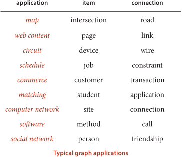
To organize the presentation, we progress through the four most important types of graph models: undirected graphs (with simple connections), digraphs (where the direction of each connection is significant), edge-weighted graphs (where each connection has an associated weight), and edge-weighted digraphs (where each connection has both a direction and a weight).
OUR STARTING POINT is the study of graph models where edges are nothing more than connections between vertices. We use the term undirected graph in contexts where we need to distinguish this model from other models (such as the title of this section), but, since this is the simplest model, we start with the following definition:
Vertex names are not important to the definition, but we need a way to refer to vertices. By convention, we use the names 0 through V−1 for the vertices in a V-vertex graph. The main reason that we choose this system is to make it easy to write code that efficiently accesses information corresponding to each vertex, using array indexing. It is not difficult to use a symbol table to establish a 1-1 mapping to associate V arbitrary vertex names with the V integers between 0 and V−1 (see page 548), so the convenience of using indices as vertex names comes without loss of generality (and without much loss of efficiency). We use the notation v-w to refer to an edge that connects v and w; the notation w-v is an alternate way to refer to the same edge.
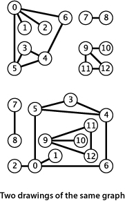
We draw a graph with circles for the vertices and lines connecting them for the edges. A drawing gives us intuition about the structure of the graph; but this intuition can be misleading, because the graph is defined independently of the drawing. For example, the two drawings at left represent the same graph, because the graph is nothing more than its (unordered) set of vertices and its (unordered) collection of edges (vertex pairs).
Our definition allows two simple anomalies:
• A self-loop is an edge that connects a vertex to itself.
• Two edges that connect the same pair of vertices are parallel.
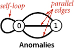
Mathematicians sometimes refer to graphs with parallel edges as multigraphs and graphs with no parallel edges or self-loops as simple graphs. Typically, our implementations allow self-loops and parallel edges (because they arise in applications), but we do not include them in examples. Thus, we can refer to every edge just by naming the two vertices it connects.
A substantial amount of nomenclature is associated with graphs. Most of the terms have straightforward definitions, and, for reference, we consider them in one place: here.
When there is an edge connecting two vertices, we say that the vertices are adjacent to one another and that the edge is incident to both vertices. The degree of a vertex is the number of edges incident to it. A subgraph is a subset of a graph’s edges (and associated vertices) that constitutes a graph. Many computational tasks involve identifying subgraphs of various types. Of particular interest are edges that take us through a sequence of vertices in a graph.
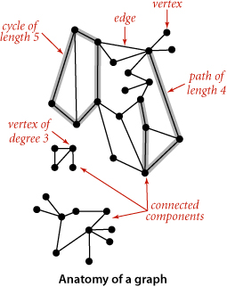
Most often, we work with simple cycles and simple paths and drop the simple modifer; when we want to allow repeated vertices, we refer to general paths and cycles. We say that one vertex is connected to another if there exists a path that contains both of them. We use notation like u-v-w-x to represent a path from u to x and u-v-w-x-u to represent a cycle from u to v to w to x and back to u again. Several of the algorithms that we consider find paths and cycles. Moreover, paths and cycles lead us to consider the structural properties of a graph as a whole:
Intuitively, if the vertices were physical objects, such as knots or beads, and the edges were physical connections, such as strings or wires, a connected graph would stay in one piece if picked up by any vertex, and a graph that is not connected comprises two or more such pieces. Generally, processing a graph necessitates processing the connected components one at a time.
An acyclic graph is a graph with no cycles. Several of the algorithms that we consider are concerned with finding acyclic subgraphs of a given graph that satisfy certain properties. We need additional terminology to refer to these structures:
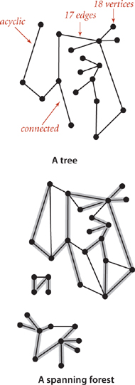
This definition of tree is quite general: with suitable refinements it embraces the trees that we typically use to model program behavior (function-call hierarchies) and data structures (BSTs, 2-3 trees, and so forth). Mathematical properties of trees are well-studied and intuitive, so we state them without proof. For example, a graph G with V vertices is a tree if and only if it satisfies any of the following five conditions:
• G has V−1 edges and no cycles.
• G has V−1 edges and is connected.
• G is connected, but removing any edge disconnects it.
• G is acyclic, but adding any edge creates a cycle.
• Exactly one simple path connects each pair of vertices in G.
Several of the algorithms that we consider find spanning trees and forests, and these properties play an important role in their analysis and implementation.
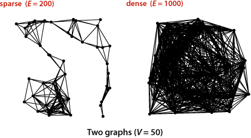
The density of a graph is the proportion of possible pairs of vertices that are connected by edges. A sparse graph has relatively few of the possible edges present; a dense graph has relatively few of the possible edges missing. Generally, we think of a graph as being sparse if its number of different edges is within a small constant factor of V and as being dense otherwise. This rule of thumb leaves a gray area (when the number of edges is, say, ~ c V3/2) but the distinction between sparse and dense is typically very clear in applications. The applications that we consider nearly always involve sparse graphs.
A bipartite graph is a graph whose vertices we can divide into two sets such that all edges connect a vertex in one set with a vertex in the other set. The figure at right gives an example of a bipartite graph, where one set of vertices is colored red and the other set of vertices is colored black. Bipartite graphs arise in a natural way in many situations, one of which we will consider in detail at the end of this section.
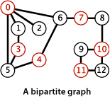
WITH THESE PREPARATIONS, we are ready to move on to consider graph-processing algorithms. We begin by considering an API and implementation for a graph data type, then we consider classic algorithms for searching graphs and for identifying connected components. To conclude the section, we consider real-world applications where vertex names need not be integers and graphs may have huge numbers of vertices and edges.
Our starting point for developing graph-processing algorithms is an API that defines the fundamental graph operations. This scheme allows us to address graph-processing tasks ranging from elementary maintenance operations to sophisticated solutions of difficult problems.
This API contains two constructors, methods to return the number of vertices and edges, a method to add an edge, a toString() method, and a method adj() that allows client code to iterate through the vertices adjacent to a given vertex (the order of iteration is not specified). Remarkably, we can build all of the algorithms that we consider in this section on the basic abstraction embodied in adj().
The second constructor assumes an input format consisting of 2E + 2 integer values: V, then E, then E pairs of values between 0 and V−1, each pair denoting an edge. As examples, we use the two graphs tinyG.txt and mediumG.txt that are depicted below.
Several examples of Graph client code are shown in the table on the facing page.

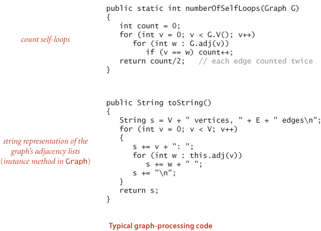
The next decision that we face in graph processing is which graph representation (data structure) to use to implement this API. We have two basic requirements:
• We must have the space to accommodate the types of graphs that we are likely to encounter in applications.
• We want to develop time-efficient implementations of Graph instance methods—the basic methods that we need to develop graph-processing clients.
These requirements are a bit vague, but they are still helpful in choosing among the three data structures that immediately suggest themselves for representing graphs:
• An adjacency matrix, where we maintain a V-by-V boolean array, with the entry in row v and column w defined to be true if there is an edge adjacent to both vertex v and vertex w in the graph, and to be false otherwise. This representation fails on the first count—graphs with millions of vertices are common and the space cost for the V2 boolean values needed is prohibitive.
• An array of edges, using an Edge class with two instance variables of type int. This direct representation is simple, but it fails on the second count—implementing adj() would involve examining all the edges in the graph.
• An array of adjacency lists, where we maintain a vertex-indexed array of lists of the vertices adjacent to each vertex. This data structure satisfies both requirements for typical applications and is the one that we will use throughout this chapter.
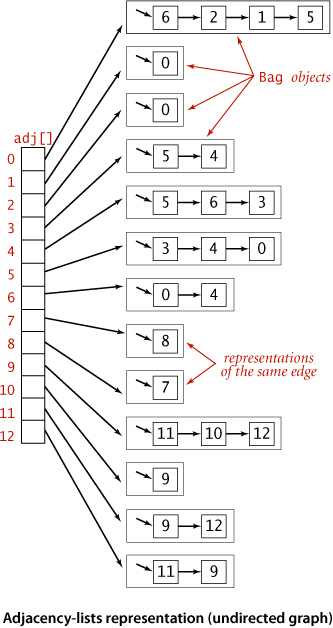
Beyond these performance objectives, a detailed examination reveals other considerations that can be important in some applications. For example, allowing parallel edges precludes the use of an adjacency matrix, since the adjacency matrix has no way to represent them.
The standard graph representation for graphs that are not dense is called the adjacency-lists data structure, where we keep track of all the vertices adjacent to each vertex on a linked list that is associated with that vertex. We maintain an array of lists so that, given a vertex, we can immediately access its list. To implement lists, we use our Bag ADT from SECTION 1.3 with a linked-list implementation, so that we can add new edges in constant time and iterate through adjacent vertices in constant time per adjacent vertex. The Graph implementation on page 526 is based on this approach, and the figure on the facing page depicts the data structures built by this code for tinyG.txt. To add an edge connecting v and w, we add w to v’s adjacency list and v to w’s adjacency list. Thus, each edge appears twice in the data structure. This Graph implementation achieves the following performance characteristics:
• Space usage proportional to V + E
• Constant time to add an edge
• Time proportional to the degree of v to iterate through vertices adjacent to v (constant time per adjacent vertex processed)
These characteristics are optimal for this set of operations, which suffice for the graph-processing applications that we consider. Parallel edges and self-loops are allowed (we do not check for them). Note: It is important to realize that the order in which edges are added to the graph determines the order in which vertices appear in the array of adjacency lists built by Graph. Many different arrays of adjacency lists can represent the same graph. When using the constructor that reads edges from an input stream, this means that the input format and the order in which edges are specified in the file determine the order in which vertices appear in the array of adjacency lists built by Graph. Since our algorithms use adj() and process all adjacent vertices without regard to the order in which they appear in the lists, this difference does not affect their correctness, but it is important to bear it in mind when debugging or following traces. To facilitate these activities, we assume that Graph has a test client that reads a graph from the input stream named as command-line argument and then prints it (relying on the toString() implementation on page 523) to show the order in which vertices appear in adjacency lists, which is the order in which algorithms process them (see EXERCISE 4.1.7).

IT IS CERTAINLY REASONABLE to contemplate other operations that might be useful in applications, and to consider methods for
• Adding a vertex
• Deleting a vertex
One way to handle such operations is to expand the API and use a symbol table (ST) instead of a vertex-indexed array (with this change we also do not need our convention that vertex names be integer indices). We might also consider methods for
• Deleting an edge
• Checking whether the graph contains the edge v-w
To implement these two operations (and disallow parallel edges) we might use a SET instead of a Bag for adjacency lists. We refer to this alternative as an adjacency set representation. We do not use either of these two alternatives in this book for several reasons:
• Our clients do not need to add vertices, delete vertices and edges, or check whether an edge exists.
• When clients do need these operations, they typically are invoked infrequently or for short adjacency lists, so an easy option is to use a brute-force implementation that iterates through an adjacency list.
• The SET and ST representations slightly complicate algorithm implementation code, diverting attention from the algorithms themselves.
• A performance penalty of log V is involved in some situations.
It is not difficult to adapt our algorithms to accommodate other designs (for example disallowing parallel edges or self-loops) without undue performance penalties. The table below summarizes performance characteristics of the alternatives that we have mentioned. Typical applications process huge sparse graphs, so we use the adjacency-lists representation throughout.

Since we consider a large number of graph-processing algorithms, our initial design goal is to decouple our implementations from the graph representation. To do so, we develop, for each given task, a task-specific class so that clients can create objects to perform the task. Generally, the constructor does some preprocessing to build data structures so as to efficiently respond to client queries. A typical client program builds a graph, passes that graph to an algorithm implementation class (as argument to a constructor), and then calls client query methods to learn various properties of the graph. As a warmup, consider this API:
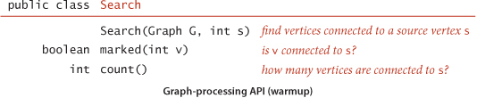
We use the term source to distinguish the vertex provided as argument to the constructor from the other vertices in the graph. In this API, the job of the constructor is to find the vertices in the graph that are connected to the source. Then client code calls the instance methods marked() and count() to learn characteristics of the graph. The name marked() refers to an approach used by the basic algorithms that we consider throughout this chapter: they follow paths from the source to other vertices in the graph, marking each vertex encountered. The example client TestSearch shown on the facing page takes an input stream name and a source vertex number from the command line, reads a graph from the input stream (using the second Graph constructor), builds a Search object for the given graph and source, and uses marked() to print the vertices in that graph that are connected to the source. It also calls count() and prints whether or not the graph is connected (the graph is connected if and only if the search marked all of its vertices).
WE HAVE ALREADY SEEN one way to implement the Search API: the union-find algorithms of CHAPTER 1. The constructor can build a UF object, do a union() operation for each of the graph’s edges, and implement marked(v) by calling connected(s, v). Implementing count() requires using a weighted UF implementation and extending its API to use a count() method that returns wt[find(v)] (see EXERCISE 4.1.8). This implementation is simple and efficient, but the implementation that we consider next is even simpler and more efficient. It is based on depth-first search, a fundamental recursive method that follows the graph’s edges to find the vertices connected to the source. Depth-first search is the basis for several of the graph-processing algorithms that we consider throughout this chapter.
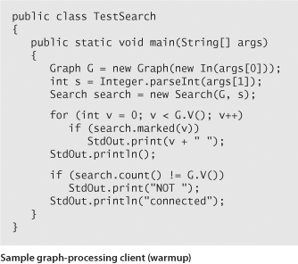
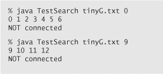
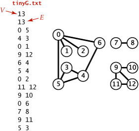
We often learn properties of a graph by systematically examining each of its vertices and each of its edges. Determining some simple graph properties—for example, computing the degrees of all the vertices—is easy if we just examine each edge (in any order whatever). But many other graph properties are related to paths, so a natural way to learn them is to move from vertex to vertex along the graph’s edges. Nearly all of the graph-processing algorithms that we consider use this same basic abstract model, albeit with various different strategies. The simplest is a classic method that we now consider.
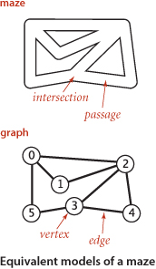
It is instructive to think about the process of searching through a graph in terms of an equivalent problem that has a long and distinguished history—finding our way through a maze that consists of passages connected by intersections. Some mazes can be handled with a simple rule, but most mazes require a more sophisticated strategy. Using the terminology maze instead of graph, passage instead of edge, and intersection instead of vertex is making mere semantic distinctions, but, for the moment, doing so will help to give us an intuitive feel for the problem. One trick for exploring a maze without getting lost that has been known since antiquity (dating back at least to the legend of Theseus and the Minotaur) is known as Tremaux exploration. To explore all passages in a maze:
• Take any unmarked passage, unrolling a string behind you.
• Mark all intersections and passages when you first visit them.
• Retrace steps (using the string) when approaching a marked intersection.
• Retrace steps when no unvisited options remain at an intersection encountered while retracing steps.
The string guarantees that you can always find a way out and the marks guarantee that you avoid visiting any passage or intersection twice. Knowing that you have explored the whole maze demands a more complicated argument that is better approached in the context of graph search. Tremaux exploration is an intuitive starting point, but it differs in subtle ways from exploring a graph, so we now move on to searching in graphs.
The classic recursive method for searching in a connected graph (visiting all of its vertices and edges) mimics Tremaux maze exploration but is even simpler to describe. To search a graph, invoke a recursive method that visits vertices. To visit a vertex:
• Mark it as having been visited.
• Visit (recursively) all the vertices that are adjacent to it and that have not yet been marked.
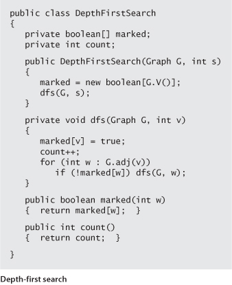
This method is called depth-first search (DFS). An implementation of our Search API using this method is shown at right. It maintains an array of boolean values to mark all of the vertices that are connected to the source. The recursive method marks the given vertex and calls itself for any unmarked vertices on its adjacency list. If the graph is connected, every adjacency-list entry is checked.
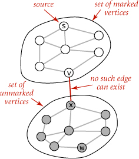
The method call–return mechanism in the program corresponds to the string in the maze: when we have processed all the edges incident to a vertex (explored all the passages leaving an intersection), we “return” (in both senses of the word). To draw a proper correspondence with Tremaux exploration of a maze, we need to imagine a maze constructed entirely of one-way passages (one in each direction). In the same way that we encounter each passage in the maze twice (once in each direction), we encounter each edge in the graph twice (once at each of its vertices). In Tremaux exploration, we either explore a passage for the first time or return along it from a marked vertex; in DFS of an undirected graph, we either do a recursive call when we encounter an edge v-w (if w is not marked) or skip the edge (if w is marked). The second time that we encounter the edge, in the opposite orientation w-v, we always ignore it, because the destination vertex v has certainly already been visited (the first time that we encountered the edge).
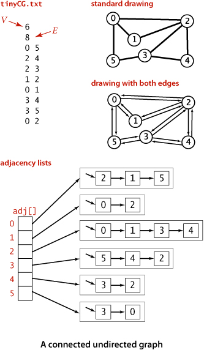
As usual, one good way to understand an algorithm is to trace its behavior on a small example. This is particularly true of depth-first search. The first thing to bear in mind when doing a trace is that the order in which edges are examined and vertices visited depends upon the representation, not just the graph or the algorithm. Since DFS only examines vertices connected to the source, we use the small connected graph depicted at left as an example for traces. In this example, vertex 2 is the first vertex visited after 0 because it happens to be first on 0’s adjacency list. The second thing to bear in mind when doing a trace is that, as mentioned above, DFS traverses each edge in the graph twice, always finding a marked vertex the second time. One effect of this observation is that tracing a DFS takes twice as long as you might think! Our example graph has only eight edges, but we need to trace the action of the algorithm on the 16 entries on the adjacency lists.
The figure at right shows the contents of the data structures just after each vertex is marked for our small example, with source 0. The search begins when the constructor calls the recursive dfs() to mark and visit vertex 0 and proceeds as follows:
• Since 2 is first on 0’s adjacency list and is unmarked, dfs() recursively calls itself to mark and visit 2 (in effect, the system puts 0 and the current position on 0’s adjacency list on a stack).
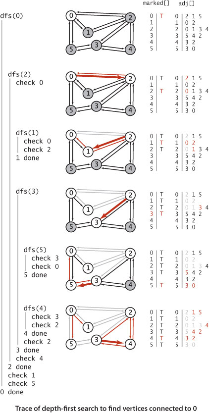
• Now, 0 is first on 2’s adjacency list and is marked, so dfs() skips it. Then, since 1 is next on 2’s adjacency list and is unmarked, dfs() recursively calls itself to mark and visit 1.
• Visiting 1 is different: since both vertices on its list (0 and 2) are already marked, no recursive calls are needed, and dfs() returns from the recursive call dfs(1). The next edge examined is 2-3 (since 3 is the vertex after 1 on 2’s adjacency list), so dfs() recursively calls itself to mark and visit 3.
• Vertex 5 is first on 3’s adjacency list and is unmarked, so dfs() recursively calls itself to mark and visit 5.
• Both vertices on 5’s list (3 and 0) are already marked, so no recursive calls are needed,
• Vertex 4 is next on 3’s adjacency list and is unmarked, so dfs() recursively calls itself to mark and visit 4, the last vertex to be marked.
• After 4 is marked, dfs() needs to check the vertices on its list, then the remaining vertices on 3’s list, then 2’s list, then 0’s list, but no more recursive calls happen because all vertices are marked.
THIS BASIC RECURSIVE SCHEME IS JUST A START—depth-first search is effective for many graph-processing tasks. For example, in this section, we consider the use of depth-first search to address a problem that we first posed in CHAPTER 1:
Connectivity. Given a graph, support queries of the form Are two given vertices connected? and How many connected components does the graph have?
This problem is easily solved within our standard graph-processing design pattern, and we will compare and contrast this solution with the union-find algorithms that we considered in SECTION 1.5.
The question “Are two given vertices connected?” is equivalent to the question “Is there a path connecting two given vertices?” and might be named the path detection problem. However, the union-find data structures that we considered in SECTION 1.5 do not address the problems of finding such a path. Depth-first search is the first of several approaches that we consider to solve this problem, as well:
Single-source paths. Given a graph and a source vertex s, support queries of the form Is there a path from s to a given target vertex v? If so, find such a path.
DFS is deceptively simple because it is based on a familiar concept and is so easy to implement; in fact, it is a subtle and powerful algorithm that researchers have learned to put to use to solve numerous difficult problems. These two are the first of several that we will consider.
The single-source paths problem is fundamental to graph processing. In accordance with our standard design pattern, we use the following API:
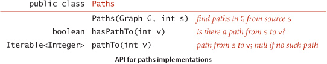
The constructor takes a source vertex s as argument and computes paths from s to each vertex connected to s. After creating a Paths object for a source s, the client can use the instance method pathTo() to iterate through the vertices on a path from s to any vertex connected to s. For the moment, we accept any path; later, we shall develop implementations that find paths having certain properties. The test client at right takes a graph from the input stream and a source from the command line and prints a path from the source to each vertex connected to it.
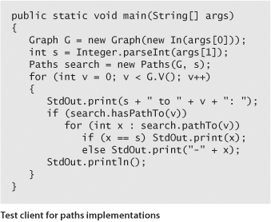
ALGORITHM 4.1 on page 536 is a DFS-based implementation of Paths that extends the DepthFirstSearch warmup on page 531 by adding as an instance variable an array edgeTo[] of int values that serves the purpose of the ball of string in Tremaux exploration: it gives a way to find a path back to s for every vertex connected to s. Instead of just keeping track of the path from the current vertex back to the start, we remember a path from each vertex to the start. To accomplish this, we remember the edge v-w that takes us to each vertex w for the first time, by setting edgeTo[w] to v. In other words, v-w is the last edge on the known path from s to w. The result of the search is a tree rooted at the source; edgeTo[] is a parent-link representation of that tree. A small example is drawn to the right of the code in ALGORITHM 4.1. To recover the path from s to any vertex v, the pathTo() method in ALGORITHM 4.1 uses a variable x to travel up the tree, setting x to edgeTo[x], just as we did for union-find in SECTION 1.5, putting each vertex encountered onto a stack until reaching s. Returning the stack to the client as an Iterable enables the client to follow the path from s to v.
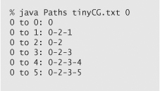
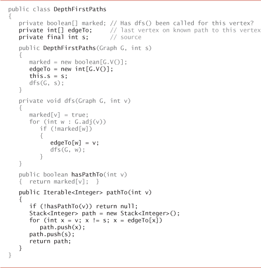

This Graph client uses depth-first search to find paths to all the vertices in a graph that are connected to a given start vertex s. Code from DepthFirstSearch (page 531) is printed in gray. To save known paths to each vertex, this code maintains a vertex-indexed array edgeTo[] such that edgeTo[w] = v means that v-w was the edge used to access w for the first time. The edgeTo[] array is a parent-link representation of a tree rooted at s that contains all the vertices connected to s.
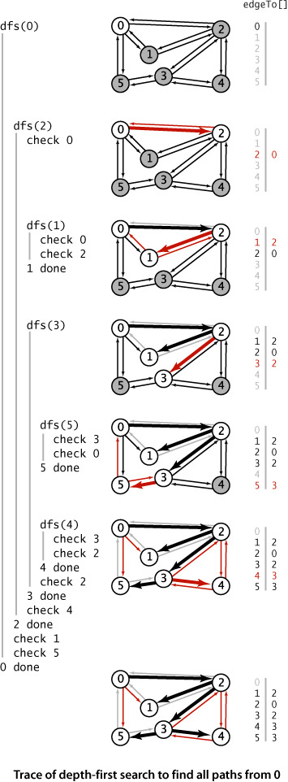
The figure at right shows the contents of edgeTo[] just after each vertex is marked for our example, with source 0. The contents of marked[] and adj[] are the same as in the trace of DepthFirstSearch on page 533, as is the detailed description of the recursive calls and the edges checked, so these aspects of the trace are omitted. The depth-first search adds the edges 0-2, 2-1, 2-3, 3-5, and 3-4 to edgeTo[], in that order. These edges form a tree rooted at the source and provide the information needed for pathTo() to provide for the client the path from 0 to 1, 2, 3, 4, or 5, as just described.
THE CONSTRUCTOR in DepthFirstPaths differs only in a few assignment statements from the constructor in DepthFirstSearch, so PROPOSITION A on page 531 applies. In addition, we have:
The paths discovered by depth-first search depend not just on the graph, but also on the representation and the nature of the recursion. Naturally, we are often interested in solving the following problem:
Single-source shortest paths. Given a graph and a source vertex s, support queries of the form Is there a path from s to a given target vertex v? If so, find a shortest such path (one with a minimal number of edges).
The classical method for accomplishing this task, called breadth-first search (BFS), is also the basis of numerous algorithms for processing graphs, so we consider it in detail in this section. DFS offers us little assistance in solving this problem, because the order in which it takes us through the graph has no relationship to the goal of finding shortest paths. In contrast, BFS is based on this goal. To find a shortest path from s to v, we start at s and check for v among all the vertices that we can reach by following one edge, then we check for v among all the vertices that we can reach from s by following two edges, and so forth. DFS is analogous to one person exploring a maze. BFS is analogous to a group of searchers exploring by fanning out in all directions, each unrolling his or her own ball of string. When more than one passage needs to be explored, we imagine that the searchers split up to expore all of them; when two groups of searchers meet up, they join forces (using the ball of string held by the one getting there first).

In a program, when we come to a point during a graph search where we have more than one edge to traverse, we choose one and save the others to be explored later. In DFS, we use a pushdown stack (that is managed by the system to support the recursive search method) for this purpose. Using the LIFO rule that characterizes the pushdown stack corresponds to exploring passages that are close by in a maze. We choose, of the passages yet to be explored, the one that was most recently encountered. In BFS, we want to explore the vertices in order of their distance from the source. It turns out that this order is easily arranged: use a (FIFO) queue instead of a (LIFO) stack. We choose, of the passages yet to be explored, the one that was least recently encountered.
ALGORITHM 4.2 on page 540 is an implementation of BFS. It is based on maintaining a queue of all vertices that have been marked but whose adjacency lists have not been checked. We put the source vertex on the queue, then perform the following steps until the queue is empty:
• Take the next vertex v from the queue and mark it.
• Put onto the queue all unmarked vertices that are adjacent to v.
The bfs() method in ALGORITHM 4.2 is not recursive. Instead of the implicit stack provided by recursion, it uses an explicit queue. The product of the search, as for DFS, is an array edgeTo[], a parent-link representation of a tree rooted at s, which defines the shortest paths from s to every vertex that is connected to s. The paths can be constructed for the client using the same pathTo() implementation that we used for DFS in ALGORITHM 4.1.
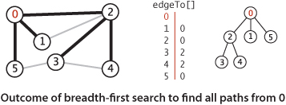
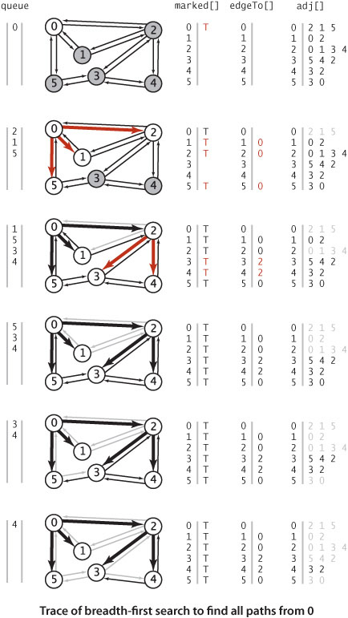
The figure at right shows the step-by-step development of BFS on our sample graph, showing the contents of the data structures at the beginning of each iteration of the loop. Vertex 0 is put on the queue, then the loop completes the search as follows:
• Removes 0 from the queue and puts its adjacent vertices 2, 1, and 5 on the queue, marking each and setting the edgeTo[] entry for each to 0.
• Removes 2 from the queue, checks its adjacent vertices 0 and 1, which are marked, and puts its adjacent vertices 3 and 4 on the queue, marking each and setting the edgeTo[] entry for each to 2.
• Removes 1 from the queue and checks its adjacent vertices 0 and 2, which are marked.
• Removes 5 from the queue and checks its adjacent vertices 3 and 0, which are marked.
• Removes 3 from the queue and checks its adjacent vertices 5, 4, and 2, which are marked.
• Removes 4 from the queue and checks its adjacent vertices 3 and 2, which are marked.
For this example, the edgeTo[] array is complete after the second step. As with DFS, once all vertices have been marked, the rest of the computation is just checking edges to vertices that have already been marked.
Note that we can also use BFS to implement the Search API that we implemented with DFS, since the solution depends on only the ability of the search to examine every vertex and edge connected to the source.
As implied at the outset, DFS and BFS are the first of several instances that we will examine of a general approach to searching graphs. We put the source vertex on the data structure, then perform the following steps until the data structure is empty:
• Take the next vertex v from the data structure and mark it.
• Put onto the data structure all unmarked vertices that are adjacent to v.
The algorithms differ only in the rule used to take the next vertex from the data structure (least recently added for BFS, most recently added for DFS). This difference leads to completely different views of the graph, even though all the vertices and edges connected to the source are examined no matter what rule is used.
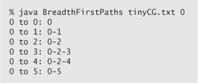
THE DIAGRAMS ON EITHER SIDE of this page, which show the progress of DFS and BFS for our sample graph mediumG.txt, make plain the differences between the paths that are discovered by the two approaches. DFS wends its way through the graph, storing on the stack the points where other paths branch off; BFS sweeps through the graph, using a queue to remember the frontier of visited places. DFS explores the graph by looking for new vertices far away from the start point, taking closer vertices only when dead ends are encountered; BFS completely covers the area close to the starting point, moving farther away only when everything nearby has been examined. DFS paths tend to be long and winding; BFS paths are short and direct. Depending upon the application, one property or the other may be desirable (or properties of paths may be immaterial). In SECTION 4.4, we will be considering other implementations of the Paths API that find paths having other specified properties.
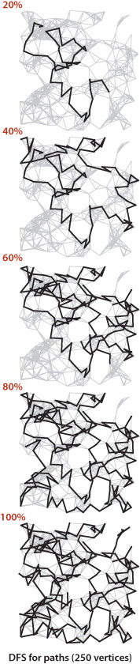
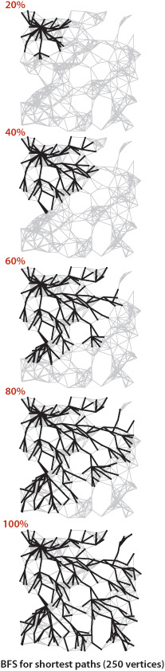
Our next direct application of depth-first search is to find the connected components of a graph. Recall from SECTION 1.5 (see page 216) that “is connected to” is an equivalence relation that divides the vertices into equivalence classes (the connected components). For this common graph-processing task, we define the following API:
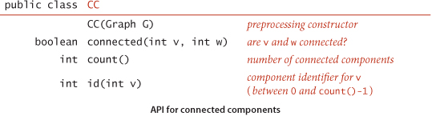
The id() method is for client use in indexing an array by component, as in the test client below, which reads a graph and then prints its number of connected components and then the vertices in each component, one component per line. To do so, it builds an array of Bag objects, then uses each vertex’s component identifier as an index into this array, to add the vertex to the appropriate Bag. This client is a model for the typical situation where we want to independently process connected components.
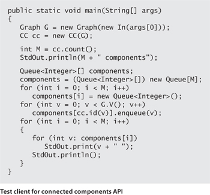
The implementation CC (ALGORITHM 4.3 on the next page) uses our marked[] array to find a vertex to serve as the starting point for a depth-first search in each component. The first call to the recursive DFS is for vertex 0—it marks all vertices connected to 0. Then the for loop in the constructor looks for an unmarked vertex and calls the recursive dfs() to mark all vertices connected to that vertex. Moreover, it maintains a vertex-indexed array id[] that associates the same int value to every vertex in each component. This array makes the implementation of connected() simple, in precisely the same manner as connected() in SECTION 1.5 (just check if identifiers are equal). In this case, the identifier 0 is assigned to all the vertices in the first component processed, 1 is assigned to all the vertices in the second component processed, and so forth, so that the identifiers are all between 0 and count()-1, as specified in the API. This convention enables the use of component-indexed arrays, as in the test client on page 543.
How does the DFS-based solution for graph connectivity in CC compare with the union-find approach of CHAPTER 1? In theory, DFS is faster than union-find because it provides a constant-time guarantee, which union-find does not; in practice, this difference is negligible, and union-find is faster because it does not have to build a full representation of the graph. More important, union-find is an online algorithm (we can check whether two vertices are connected in near-constant time at any point, even while adding edges), whereas the DFS solution must first preprocess the graph. Therefore, for example, we prefer union-find when determining connectivity is our only task or when we have a large number of queries intermixed with edge insertions but may find the DFS solution more appropriate for use in a graph ADT because it makes efficient use of existing infrastructure.
THE PROBLEMS THAT WE HAVE SOLVED with DFS are fundamental. It is a simple approach, and recursion provides us a way to reason about the computation and develop compact solutions to graph-processing problems. Two additional examples, for solving the following problems, are given in the table on the facing page.
Cycle detection. Support this query: Is a given graph acylic?
Two-colorability. Support this query: Can the vertices of a given graph be assigned one of two colors in such a way that no edge connects vertices of the same color? which is equivalent to this question: Is the graph bipartite?
As usual with DFS, the simple code masks a more sophisticated computation, so studying these examples, tracing their behavior on small sample graphs, and extending them to provide a cycle or a coloring, respectively, are worthwhile (and left for exercises).
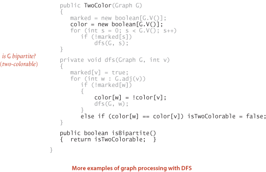
Typical applications involve processing graphs defined in files or on web pages, using strings, not integer indices, to define and refer to vertices. To accommodate such applications, we define an input format with the following properties:
• Vertex names are strings.
• A specified delimiter separates vertex names (to allow for the possibility of spaces in names).
• Each line represents a set of edges, connecting the first vertex name on the line to each of the other vertices named on the line.
• The number of vertices V and the number of edges E are both implicitly defined.
Shown below is a small example, the file routes.txt, which represents a model for a small transportation system where vertices are U.S. airport codes and edges connecting them are airline routes between the vertices. The file is simply a list of edges. Shown on the facing page is a larger example, taken from the file movies.txt, from the Internet Movie Database (IMDB), that we introduced in SECTION 3.5. Recall that this file consists of lines listing a movie name followed by a list of the performers in the movie. In the context of graph processing, we can view it as defining a graph with movies and performers as vertices and each line defining the adjacency list of edges connecting each movie to its performers. Note that the graph is a bipartite graph—there are no edges connecting performers to performers or movies to movies.
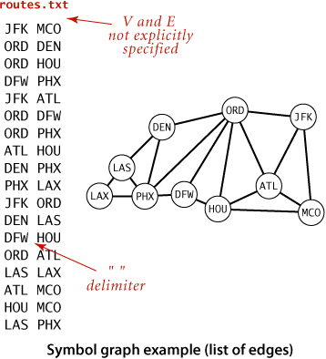
The following API defines a Graph client that allows us to immediately use our graph-processing routines for graphs defined by such files:
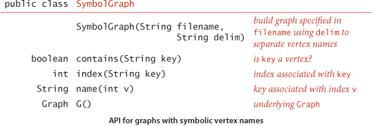
This API provides a constructor to read and build the graph and client methods name() and index() for translating vertex names between the strings on the input stream and the integer indices used by our graph-processing methods.
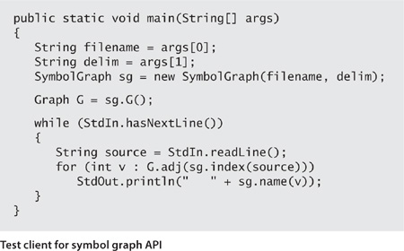
The test client at left builds a graph from the file named as the first command-line argument (using the delimiter as specified by the second command-line argument) and then takes queries from standard input. The user specifies a vertex name and gets the list of vertices adjacent to that vertex. This client immediately provides the useful inverted index functionality that we considered in SECTION 3.5. In the case of routes.txt, you can type an airport code to find the direct flights from that airport, information that is not directly available in the data file. In the case of movies.txt, you can type the name of a performer to see the list of the movies in the database in which that performer appeared, or you can type the name of a movie to see the list of performers that appear in that movie. Typing a movie name and getting its cast is not much more than regurgitating the corresponding line in the input file, but typing the name of a performer and getting the list of movies in which that performer has appeared is inverting the index. Even though the database is built around connecting movies to performers, the bipartite graph model embraces the idea that it also connects performers to movies. The bipartite graph model automatically serves as an inverted index and also provides the basis for more sophisticated processing, as we will see.
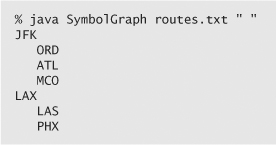
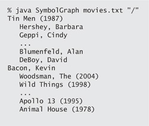
THIS APPROACH IS CLEARLY EFFECTIVE for any of the graph-processing methods that we consider: any client can use index() when it wants to convert a vertex name to an index for use in graph processing and name() when it wants to convert an index from graph processing into a name for use in the context of the application.
A full SymbolGraph implementation is given on page 552. It builds three data structures:
• A symbol table st with String keys (vertex names) and int values (indices)
• An array keys[] that serves as an inverted index, giving the vertex name associated with each integer index
• A Graph G built using the indices to refer to vertices
SymbolGraph uses two passes through the data to build these data structures, primarily because the number of vertices V is needed to build the Graph. In typical real-world applications, keeping the value of V and E in the graph definition file (as in our Graph constructor at the beginning of this section) is somewhat inconvenient—with SymbolGraph, we can maintain files such as routes.txt or movies.txt by adding or deleting entries without regard to the number of different names involved.
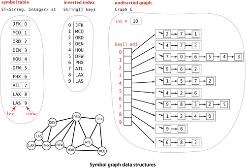
One of the classic applications of graph processing is to find the degree of separation between two individuals in a social network. To fix ideas, we discuss this application in terms of a recently popularized pastime known as the Kevin Bacon game, which uses the movie-performer graph that we just considered. Kevin Bacon is a prolific actor who has appeared in many movies. We assign every performer a Kevin Bacon number as follows: Bacon himself is 0, any performer who has been in the same cast as Bacon has a Kevin Bacon number of 1, any other performer (except Bacon) who has been in the same cast as a performer whose number is 1 has a Kevin Bacon number of 2, and so forth. For example, Meryl Streep has a Kevin Bacon number of 1 because she appeared in The River Wild with Kevin Bacon. Nicole Kidman’s number is 2: although she did not appear in any movie with Kevin Bacon, she was in Days of Thunder with Tom Cruise, and Cruise appeared in A Few Good Men with Kevin Bacon. Given the name of a performer, the simplest version of the game is to find some alternating sequence of movies and performers that leads back to Kevin Bacon. For example, a movie buff might know that Tom Hanks was in Joe Versus the Volcano with Lloyd Bridges, who was in High Noon with Grace Kelly, who was in Dial M for Murder with Patrick Allen, who was in The Eagle Has Landed with Donald Sutherland, who was in Animal House with Kevin Bacon. But this knowledge does not suffice to establish Tom Hanks’s Bacon number (it is actually 1 because he was in Apollo 13 with Kevin Bacon). You can see that the Kevin Bacon number has to be defined by counting the movies in the shortest such sequence, so it is hard to be sure whether someone wins the game without using a computer. Of course, as illustrated in the SymbolGraph client DegreesOfSeparation on page 555, BreadthFirstPaths is the program we need to find a shortest path that establishes the Kevin Bacon number of any performer in movies.txt. This program takes a source vertex from the command line, then takes queries from standard input and prints a shortest path from the source to the query vertex. Since the graph associated with movies.txt is bipartite, all paths alternate between movies and performers, and the printed path is a “proof” that the path is valid (but not a proof that it is the shortest such path—you need to educate your friends about PROPOSITION B for that). DegreesOfSeparation also finds shortest paths in graphs that are not bipartite: for example, it finds a way to get from one airport to another in routes.txt using the fewest connections.
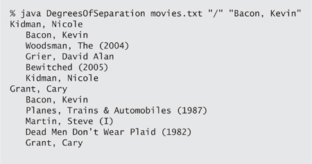
YOU MIGHT ENJOY USING DegreesOfSeparation to answer some entertaining questions about the movie business. For example, you can find separations between movies, not just performers. More important, the concept of separation has been widely studied in many other contexts. For example, mathematicians play this same game with the graph defined by paper co-authorship and their connection to P. Erdös, a prolific 20th-century mathematician. Similarly, everyone in New Jersey seems to have a Bruce Springsteen number of 2, because everyone in the state seems to know someone who claims to know Bruce. To play the Erdös game, you would need a database of all mathematical papers; playing the Springsteen game is a bit more challenging. On a more serious note, degrees of separation play a crucial role in the design of computer and communications networks, and in our understanding of natural networks in all fields of science.
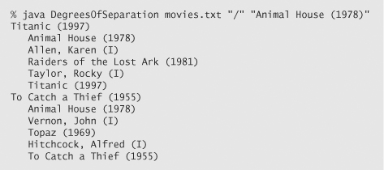
In this section, we have introduced several basic concepts that we will expand upon and further develop throughout the rest of this chapter:
• Graph nomenclature
• A graph representation that enables processing of huge sparse graphs
• A design pattern for graph processing, where we implement algorithms by developing clients that preprocess the graph in the constructor, building data structures that can efficiently support client queries about the graph
• Depth-first search and breadth-first search
• A class providing the capability to use symbolic vertex names
The table below summarizes the implementations of graph algorithms that we have considered. These algorithms are a proper introduction to graph processing, since variants on their code will resurface as we consider more complicated types of graphs and applications, and (consequently) more difficult graph-processing problems. The same questions involving connections and paths among vertices become much more difficult when we add direction and then weights to graph edges, but the same approaches are effective in addressing them and serve as a starting point for addressing more difficult problems.
Q. Why not jam all of the algorithms into Graph.java?
A. Yes, we might just add query methods (and whatever private fields and methods each might need) to the basic Graph ADT definition. While this approach has some of the virtues of data abstraction that we have embraced, it also has some serious drawbacks, because the world of graph processing is significantly more expansive than the kinds of basic data structures treated in SECTION 1.3. Chief among these drawbacks are the following:
• There are many more graph-processing operations to implement than we can accurately define in a single API.
• Simple graph-processing tasks have to use the same API needed by complicated tasks.
• One method can access a field intended for use by another method, contrary to encapsulation principles that we would like to follow.
This situation is not unusual: APIs of this kind have come to be known as wide interfaces (see page 97). In a chapter filled with graph-processing algorithms, an API of this sort would be wide indeed.
Q. Does SymbolGraph really need two passes?
A. No. You could pay an extra lg N factor and support adj() directly as an ST instead of a Bag. We have an implementation along these lines in our book An Introduction to Programming in Java: An Interdisciplinary Approach.
4.1.1 What is the maximum number of edges in a graph with V vertices and no parallel edges? What is the minimum number of edges in a graph with V vertices, none of which are isolated?
4.1.2 Draw, in the style of the figure in the text (page 524), the adjacency lists built by Graph’s input stream constructor for the file tinyGex2.txt depicted at left.
4.1.3 Create a copy constructor for Graph that takes as input a graph G and creates and initializes a new copy of the graph. Any changes a client makes to G should not affect the newly created graph.
4.1.4 Add a method hasEdge() to Graph which takes two int arguments v and w and returns true if the graph has an edge v-w, false otherwise.
4.1.5 Modify Graph to disallow parallel edges and self-loops.
4.1.6 Consider the four-vertex graph with edges 0-1, 1-2, 2-3, and 3-0. Draw an array of adjacency-lists that could not have been built calling addEdge() for these edges no matter what order.
4.1.7 Develop a test client for Graph that reads a graph from the input stream named as command-line argument and then prints it, relying on toString().
4.1.8 Develop an implementation for the Search API on page 528 that uses UF, as described in the text.
4.1.9 Show, in the style of the figure on page 533, a detailed trace of the call dfs(0) for the graph built by Graph’s input stream constructor for the file tinyGex2.txt (see EXERCISE 4.1.2). Also, draw the tree represented by edgeTo[].
4.1.10 Prove that every connected graph has a vertex whose removal (including all adjacent edges) will not disconnect the graph, and write a DFS method that finds such a vertex. Hint: Consider a vertex whose adjacent vertices are all marked.
4.1.11 Draw the tree represented by edgeTo[] after the call bfs(G, 0) in ALGORITHM 4.2 for the graph built by Graph’s input stream constructor for the file tinyGex2.txt (see EXERCISE 4.1.2).
4.1.12 What does the BFS tree tell us about the distance from v to w when neither is at the root?
4.1.13 Add a distTo() method to the BreadthFirstPaths API and implementation, which returns the number of edges on the shortest path from the source to a given vertex. A distTo() query should run in constant time.
4.1.14 Suppose you use a stack instead of a queue when running breadth-first search. Does it still compute shortest paths?
4.1.15 Modify the input stream constructor for Graph to also allow adjacency lists from standard input (in a manner similar to SymbolGraph), as in the example tinyGadj.txt shown at right. After the number of vertices and edges, each line contains a vertex and its list of adjacent vertices.
4.1.16 The eccentricity of a vertex v is the the length of the shortest path from that vertex to the furthest vertex from v. The diameter of a graph is the maximum eccentricity of any vertex. The radius of a graph is the smallest eccentricity of any vertex. A center is a vertex whose eccentricity is the radius. Implement the following API:
4.1.18 The girth of a graph is the length of its shortest cycle. If a graph is acyclic, then its girth is infinite. Add a method girth() to GraphProperties that returns the girth of the graph. Hint: Run BFS from each vertex. The shortest cycle containing s is a shortest path from s to some vertex v, plus the edge from v back to s.
4.1.19 Show, in the style of the figure on page 545, a detailed trace of CC for finding the connected components in the graph built by Graph’s input stream constructor for the file tinyGex2.txt (see EXERCISE 4.1.2).
4.1.20 Show, in the style of the figures in this section, a detailed trace of Cycle for finding a cycle in the graph built by Graph’s input stream constructor for the file tinyGex2.txt (see EXERCISE 4.1.2). What is the order of growth of the running time of the Cycle constructor, in the worst case?
4.1.21 Show, in the style of the figures in this section, a detailed trace of TwoColor for finding a two-coloring of the graph built by Graph’s input stream constructor for the file tinyGex2.txt (see EXERCISE 4.1.2). What is the order of growth of the running time of the TwoColor constructor, in the worst case?
4.1.22 Run SymbolGraph with movies.txt to find the Kevin Bacon number of this year’s Oscar nominees.
4.1.23 Write a program BaconHistogram that prints a histogram of Kevin Bacon numbers, indicating how many performers from movies.txt have a Bacon number of 0, 1, 2, 3, .... Include a category for those who have an infinite number (not connected to Kevin Bacon).
4.1.24 Compute the number of connected components in movies.txt, the size of the largest component, and the number of components of size less than 10. Find the eccentricity, diameter, radius, a center, and the girth of the largest component in the graph. Does it contain Kevin Bacon?
4.1.25 Modify DegreesOfSeparation to take an int value y as a command-line argument and ignore movies that are more than y years old.
4.1.26 Write a SymbolGraph client like DegreesOfSeparation that uses depth-first search instead of breadth-first search to find paths connecting two performers, producing output like that shown on the facing page.
4.1.27 Determine the amount of memory used by Graph to represent a graph with V vertices and E edges, using the memory-cost model of SECTION 1.4.
4.1.28 Two graphs are isomorphic if there is a way to rename the vertices of one to make it identical to the other. Draw all the nonisomorphic graphs with two, three, four, and five vertices.
4.1.29 Modify Cycle so that it works even if the graph contains self-loops and parallel edges.
4.1.30 Eulerian and Hamiltonian cycles. Consider the graphs defined by the following four sets of edges:
Which of these graphs have Euler cycles (cycles that visit each edge exactly once)? Which of them have Hamilton cycles (cycles that visit each vertex exactly once)?
4.1.31 Graph enumeration. How many different undirected graphs are there with V vertices and E edges (and no parallel edges)?
4.1.32 Parallel edge detection. Devise a linear-time algorithm to count the parallel edges in a graph.
4.1.33 Odd cycles. Prove that a graph is two-colorable (bipartite) if and only if it contains no odd-length cycle.
4.1.34 Symbol graph. Implement a one-pass SymbolGraph (it need not be a Graph client). Your implementation may pay an extra log V factor for graph operations, for symbol-table lookups.
4.1.35 Biconnectedness. A graph is biconnected if every pair of vertices is connected by two disjoint paths. An articulation point in a connected graph is a vertex that would disconnect the graph if it (and its adjacent edges) were removed. Prove that any graph with no articulation points is biconnected. Hint: Given a pair of vertices s and t and a path connecting them, use the fact that none of the vertices on the path are articulation points to construct two disjoint paths connecting s and t.
4.1.36 Two-edge connectivity. A bridge in a graph is an edge that, if removed, would increase the number of connected components. A graph that has no bridges is said to be two-edge connected. Develop a DFS-based data type for determining whether a given graph is edge connected.
4.1.37 Euclidean graphs. Design and implement an API EuclideanGraph for graphs whose vertices are points in the plane that include coordinates. Include a method show() that uses StdDraw to draw the graph.
4.1.38 Image processing. Implement the flood fill operation on the implicit graph defined by connecting adjacent points that have the same color in an image.
4.1.39 Random graphs. Write a program ErdosRenyiGraph that takes integer values V and E from the command line and builds a graph by generating E random pairs of integers between 0 and V−1. Note: This generator produces self-loops and parallel edges.
4.1.40 Random simple graphs. Write a program RandomSimpleGraph that takes integer values V and E from the command line and produces, with equal likelihood, each of the possible simple graphs with V vertices and E edges.
4.1.41 Random sparse graphs. Write a program RandomSparseGraph to generate random sparse graphs for a well-chosen set of values of V and E such that you can use it to run meaningful empirical tests on graphs drawn from the Erdös-Renyi model.
4.1.42 Random Euclidean graphs. Write a EuclideanGraph client (see EXERCISE 4.1.37) RandomEuclideanGraph that produces random graphs by generating V random points in the plane, then connecting each point with all points that are within a circle of radius d centered at that point. Note: The graph will almost certainly be connected if d is larger than the threshold value and almost certainly disconnected if d is smaller than that value.
4.1.43 Random grid graphs. Write a EuclideanGraph client RandomGridGraph that generates random graphs by connecting vertices arranged in a -by- grid to their neighbors (see EXERCISE 1.5.15). Augment your program to add R extra random edges. For large R, shrink the grid so that the total number of edges remains about V. Add an option such that an extra edge goes from a vertex s to a vertex t with probability inversely proportional to the Euclidean distance between s and t.
4.1.44 Real-world graphs. Find a large weighted graph on the web—perhaps a map with distances, telephone connections with costs, or an airline rate schedule. Write a program RandomRealGraph that builds a graph by choosing V vertices at random and E edges at random from the subgraph induced by those vertices.
4.1.45 Random interval graphs. Consider a collection of V intervals on the real line (pairs of real numbers). Such a collection defines an interval graph with one vertex corresponding to each interval, with edges between vertices if the corresponding intervals intersect (have any points in common). Write a program that generates V random intervals in the unit interval, all of length d, then builds the corresponding interval graph. Hint: Use a BST.
4.1.46 Random transportation graphs. One way to define a transportation system is with a set of sequences of vertices, each sequence defining a path connecting the vertices. For example, the sequence 0-9-3-2 defines the edges 0-9, 9-3, and 3-2. Write a EuclideanGraph client RandomTransportation that builds a graph from an input file consisting of one sequence per line, using symbolic names. Develop input suitable to allow you to use your program to build a graph corresponding to the Paris Métro system.
Testing all algorithms and studying all parameters against all graph models is unrealistic. For each problem listed below, write a client that addresses the problem for any given input graph, then choose among the generators above to run experiments for that graph model. Use your judgment in selecting experiments, perhaps in response to results of previous experiments. Write a narrative explaining your results and any conclusions that might be drawn.
4.1.47 Path lengths in DFS. Run experiments to determine empirically the probability that DepthFirstPaths finds a path between two randomly chosen vertices and to calculate the average length of the paths found, for various graph models.
4.1.48 Path lengths in BFS. Run experiments to determine empirically the probability that BreadthFirstPaths finds a path between two randomly chosen vertices and to calculate the average length of the paths found, for various graph models.
4.1.49 Connected components. Run experiments to determine empirically the distribution of the number of components in random graphs of various types, by generating large numbers of graphs and drawing a histogram.
4.1.50 Two-colorable. Most graphs are not two-colorable, and DFS tends to discover that fact quickly. Run empirical tests to study the number of edges examined by TwoColor, for various graph models.
In directed graphs, edges are one-way: the pair of vertices that defines each edge is an ordered pair that specifies a one-way adjacency. Many applications (for example, graphs that represent the web, scheduling constraints, or telephone calls) are naturally expressed in terms of directed graphs. The one-way restriction is natural, easy to enforce in our implementations, and seems innocuous; but it implies added combinatorial structure that has profound implications for our algorithms and makes working with directed graphs quite different from working with undirected graphs. In this section, we consider classic algorithms for exploring and processing directed graphs.
Our definitions for directed graphs are nearly identical to those for undirected graphs (as are some of the algorithms and programs that we use), but they are worth restating. The slight differences in the wording to account for edge directions imply structural properties that will be the focus of this section.
We say that a directed edge points from the first vertex in the pair and points to the second vertex in the pair. The outdegree of a vertex in a digraph is the number of edges going points from it; the indegree of a vertex is the number of edges pointing to it. We drop the modifier directed when referring to edges in digraphs when the distinction is obvious in context. The first vertex in a directed edge is called its head; the second vertex is called its tail. We draw directed edges as arrows pointing from head to tail. We use the notation v->w to refer to an edge that points from v to w in a digraph. As with undirected graphs, our code handles parallel edges and self-loops, but they are not present in examples and we generally ignore them in the text. Ignoring anomalies, there are four different ways in which two vertices might be related in a digraph: no edge; an edge v->w from v to w; an edge w->v from w to v; or two edges v->w and w->v, which indicate connections in both directions.
As for undirected graphs, we assume that directed paths are simple unless we specifically relax this assumption by referring to specific repeated vertices (as in our definition of directed cycle) or to general directed paths. We say that a vertex w is reachable from a vertex v if there is a directed path from v to w. Also, we adopt the convention that each vertex is reachable from itself. Except for this case, the fact that w is reachable from v in a digraph indicates nothing about whether v is reachable from w. This distinction is obvious, but critical, as we shall see.
UNDERSTANDING THE ALGORITHMS in this section requires an appreciation of the distinction between reachability in digraphs and connectivity in undirected graphs. Developing such an appreciation is more complicated than you might think. For example, although you are likely to be able to tell at a glance whether two vertices in a small undirected graph are connected, a directed path in a digraph is not so easy to spot, as indicated in the example at left. Processing digraphs is akin to traveling around in a city where all the streets are one-way, with the directions not necessarily assigned in any uniform pattern. Getting from one point to another in such a situation could be a challenge indeed. Counter to this intuition is the fact that the standard data structure that we use for representing digraphs is simpler than the corresponding representation for undirected graphs!
The API below and the class Digraph shown on the facing page are virtually identical to those for Graph (page 526).
We use the adjacency-lists representation, where an edge v->w is represented as a list node containing w in the linked list corresponding to v. This representation is essentially the same as for undirected graphs but is even more straightforward because each edge occurs just once, as shown on the facing page.
The code for the constructor that takes a digraph from an input stream is identical to the corresponding constructor in Graph—the input format is the same, but all edges are interpreted to be directed edges. In the list-of-edges format, a pair v w is interpreted as an edge v->w.
Digraph also adds to the API a method reverse() which returns a copy of the digraph, with all edges reversed. This method is sometimes needed in digraph processing because it allows clients to find the edges that point to each vertex, while adj() gives just vertices connected by edges that point from each vertex.
It is also a simple matter to allow clients to use symbolic names in digraph applications. To implement a class SymbolDigraph like SymbolGraph on page 552, replace Graph by Digraph everywhere.
IT IS WORTHWHILE to take the time to consider carefully the difference, by comparing code and the figure at right with their counterparts for undirected graphs on page 524 and page 526. In the adjacency-lists representation of an undirected graph, we know that if v is on w’s list, then w will be on v’s list; the adjacency-lists representation of a digraph has no such symmetry. This difference has profound implications in processing digraphs.

This Digraph data type is identical to Graph (page 526) except that addEdge() only calls add() once, and it has an instance method reverse() that returns a copy with all its edges reversed. Since the code is easily derived from the corresponding code for Graph, we omit the toString() method (see the table on page 523) and the input stream constructor from (see page 526).
Our first graph-processing algorithm for undirected graphs was DepthFirstSearch on page 531, which solves the single-source connectivity problem, allowing clients to determine which vertices are connected to a given source. The identical code with Graph changed to Digraph solves the analogous problem for digraphs:
Single-source reachability. Given a digraph and a source vertex s, support queries of the form Is there a directed path from s to a given target vertex v?
DirectedDFS on the facing page is a slight embellishment of DepthFirstSearch that implements the following API:
By adding a second constructor that takes a list of vertices, this API supports for clients the following generalization of the problem:
Multiple-source reachability. Given a digraph and a set of source vertices, support queries of the form Is there a directed path from any vertex in the set to a given target vertex v?
This problem arises in the solution of a classic string-processing problem that we consider in SECTION 5.4.
DirectedDFS uses our standard graph-processing paradigm and a standard recursive depth-first search to solve these problems. It calls the recursive dfs() for each source, which marks every vertex encountered.
A trace of the operation of this algorithm for our sample digraph appears on page 572. This trace is somewhat simpler than the corresponding trace for undirected graphs, because DFS is fundamentally a digraph-processing algorithm, with one representation of each edge. Following this trace is a worthwhile way to help cement your understanding of depth-first search in digraphs.
An important application of multiple-source reachability is found in typical memory-management systems, including many implementations of Java. A digraph where each vertex represents an object and each edge represents a reference to an object is an appropriate model for the memory usage of a running Java program. At any point in the execution of a program, certain objects are known to be directly accessible, and any object not reachable from that set of objects can be returned to available memory. A mark-and-sweep garbage collection strategy reserves one bit per object for the purpose of garbage collection, then periodically marks the set of potentially accessible objects by running a digraph reachability algorithm like DirectedDFS and sweeps through all objects, collecting the unmarked ones for use for new objects.
DepthFirstPaths (ALGORITHM 4.1 on page 536) and BreadthFirstPaths (ALGORITHM 4.2 on page 540) are also fundamentally digraph-processing algorithms. Again, the identical APIs and code (with Graph changed to Digraph) effectively solve the following problems:
Single-source directed paths. Given a digraph and a source vertex s, support queries of the form Is there a directed path from s to a given target vertex v? If so, find such a path.
Single-source shortest directed paths. Given a digraph and a source vertex s, support queries of the form Is there a directed path from s to a given target vertex v? If so, find a shortest such path (one with a minimal number of edges).
On the booksite and in the exercises at the end of this section, we refer to these solutions as DepthFirstDirectedPaths and BreadthFirstDirectedPaths, respectively.
Directed cycles are of particular importance in applications that involve processing digraphs. Identifying directed cycles in a typical digraph can be a challenge without the help of a computer, as shown at right. In principle, a digraph might have a huge number of cycles; in practice, we typically focus on a small number of them, or simply are interested in knowing that none are present.
To motivate the study of the role of directed cycles in digraph processing we consider, as a running example, the following prototypical application where digraph models arise directly:
A widely applicable problem-solving model has to do with arranging for the completion of a set of jobs, under a set of constraints, by specifying when and how the jobs are to be performed. Constraints might involve functions of the time taken or other resources consumed by the jobs. The most important type of constraints is precedence constraints, which specify that certain tasks must be performed before certain others. Different types of additional constraints lead to many different types of scheduling problems, of varying difficulty. Literally thousands of different problems have been studied, and researchers still seek better algorithms for many of them. As an example, consider a college student planning a course schedule, under the constraint that certain courses are prerequisite for certain other courses, as in the example below.
If we further assume that the student can take only one course at a time, we have an instance of the following problem:
Precedence-constrained scheduling. Given a set of jobs to be completed, with precedence constraints that specify that certain jobs have to be completed before certain other jobs are begun, how can we schedule the jobs such that they are all completed while still respecting the constraints?
For any such problem, a digraph model is immediate, with vertices corresponding to jobs and directed edges corresponding to precedence constraints. For economy, we switch the example to our standard model with vertices labeled as integers, as shown at left. In digraphs, precedence-constrained scheduling amounts to the following fundamental problem:
Topological sort. Given a digraph, put the vertices in order such that all its directed edges point from a vertex earlier in the order to a vertex later in the order (or report that doing so is not possible).
A topological order for our example model is shown at right. All edges point down, so it clearly represents a solution to the precedence-constrained scheduling problem that this digraph models: the student can satisfy all course prerequisites by taking the courses in this order. This application is typical—some other representative applications are listed in the table below.
If job x must be completed before job y, job y before job z, and job z before job x, then someone has made a mistake, because those three constraints cannot all be satisfied. In general, if a precedence-constrained scheduling problem has a directed cycle, then there is no feasible solution. To check for such errors, we need to be able to solve the following problem:
Directed cycle detection. Does a given digraph have a directed cycle? If so, find the vertices on some such cycle, in order from some vertex back to itself.
A graph may have an exponential number of cycles (see EXERCISE 4.2.11) so we only ask for one cycle, not all of them. For job scheduling and many other applications it is required that no directed cycle exists, so digraphs where they are absent play a special role:
Solving the directed cycle detection problem thus answers the following question: Is a given digraph a DAG? Developing a depth-first-search-based solution to this problem is not difficult, based on the fact that the recursive call stack maintained by the system represents the “current” directed path under consideration (like the string back to the entrance in Tremaux maze exporation). If we ever find a directed edge v->w to a vertex w that is on that stack, we have found a cycle, since the stack is evidence of a directed path from w to v, and the edge v->w completes the cycle. Moreover, the absence of any such back edges implies that the graph is acyclic. DirectedCycle on the facing page uses this idea to implement the following API:
When executing dfs(G, v), we have followed a directed path from the source to v. To keep track of this path, DirectedCycle maintains a vertex-indexed array onStack[] that marks the vertices on the recursive call stack (by setting onStack[v] to true on entry to dfs(G, v) and to false on exit). DirectedCycle also maintains an edgeTo[] array so that it can return the cycle when it is detected, in the same way as DepthFirstPaths (page 536) and BreadthFirstPaths (page 540) return paths.
Precedence-constrained scheduling amounts to computing a topological order for the vertices of a DAG, as in this API:
Remarkably, it turns out that we have already seen an algorithm for topological sort: a one-line addition to our standard recursive DFS does the job! To convince you of this fact, we begin with the class DepthFirstOrder on page 580. It is based on the idea that depth-first search visits each vertex exactly once. If we save the vertex given as argument to the recursive dfs() in a data structure, then iterate through that data structure, we see all the graph vertices, in order determined by the nature of the data structure and by whether we do the save before or after the recursive calls. Three vertex orderings are of interest in typical applications:
• Preorder: Put the vertex on a queue before the recursive calls.
• Postorder: Put the vertex on a queue after the recursive calls.
• Reverse postorder: Put the vertex on a stack after the recursive calls.
A trace of DepthFirstOrder for our sample DAG is given on the facing page. It is simple to implement and supports pre(), post(), and reversePost() methods that are useful for advanced graph-processing algorithms. For example, order() in Topological consists of a call on reversePost().
Topological (ALGORITHM 4.5 on page 581) is an implementation that uses depth-first search to topologically sort a DAG. A trace is given at right.
Despite the simplicity of this algorithm, it escaped attention for many years, in favor of a more intuitive algorithm based on maintaining a queue of sources (see EXERCISE 4.2.30).
IN PRACTICE, topological sorting and cycle detection go hand in hand, with cycle detection playing the role of a debugging tool. For example, in a job-scheduling application, a directed cycle in the underlying digraph represents a mistake that must be corrected, no matter how the schedule was formulated. Thus, a job-scheduling application is typically a three-step process:
• Specify the tasks and precedence constraints.
• Make sure that a feasible solution exists, by detecting and removing cycles in the underlying digraph until none exist.
• Solve the scheduling problem, using topological sort.
Similarly, any changes in the schedule can be checked for cycles (using DirectedCycle), then a new schedule computed (using Topological).
We have been careful to maintain a distinction between reachability in digraphs and connectivity in undirected graphs. In an undirected graph, two vertices v and w are connected if there is a path connecting them—we can use that path to get from v to w or to get from w to v. In a digraph, by contrast, a vertex w is reachable from a vertex v if there is a directed path from v to w, but there may or may not be a directed path back to v from w. To complete our study of digraphs, we consider the natural analog of connectivity in undirected graphs.
Several examples of strongly connected graphs are given in the figure at left. As you can see from the examples, cycles play an important role in understanding strong connectivity. Indeed, recalling that a general directed cycle is a directed cycle that may have repeated vertices, it is easy to see that two vertices are strongly connected if and only if there exists a general directed cycle that contains them both. (Proof: compose the paths from v to w and from w to v.)
Like connectivity in undirected graphs, strong connectivity in digraphs is an equivalence relation on the set of vertices, as it has the following properties:
• Reflexive: Every vertex v is strongly connected to itself.
• Symmetric: If v is strongly connected to w, then w is strongly connected to v.
• Transitive: If v is strongly connected to w and w is strongly connected to x, then v is also strongly connected to x.
As an equivalence relation, strong connectivity partitions the vertices into equivalence classes. The equivalence classes are maximal subsets of vertices that are strongly connected to one another, with each vertex in exactly one subset. We refer to these subsets as strongly connected components, or strong components for short. Our sample digraph tinyDG.txt has five strong components, as shown in the diagram at right. A digraph with V vertices has between 1 and V strong components—a strongly connected digraph has 1 strong component and a DAG has V strong components. Note that the strong components are defined in terms of the vertices, not the edges. Some edges connect two vertices in the same strong component; some other edges connect vertices in different strong components. The latter are not found on any directed cycle. Just as identifying connected components is typically important in processing undirected graphs, identifying strong components is typically important in processing digraphs.
Strong connectivity is a useful abstraction in understanding the structure of a digraph, highlighting interrelated sets of vertices (strong components). For example, strong components can help textbook authors decide which topics should be grouped together and software developers decide how to organize program modules. The figure below shows an example from ecology. It illustrates a digraph that models the food web connecting living organisms, where vertices represent species and an edge from one vertex to another indicates that an organism of the species indicated by the point from vertex consumes organisms of the species indicated by the point to vertex for food. Scientific studies on such digraphs (with carefully chosen sets of species and carefully documented relationships) play an important role in helping ecologists answer basic questions about ecological systems. Strong components in such digraphs can help ecologists understand energy flow in the food web. The figure on page 591 shows a digraph model of web content, where vertices represent pages and edges represent hyperlinks from one page to another. Strong components in such a digraph can help network engineers partition the huge number of pages on the web into more manageable sizes for processing. Further properties of these applications and other examples are addressed in the exercises and on the booksite.
Accordingly, we need the following API, the analog for digraphs of CC (page 543):
A quadratic algorithm to compute strong components is not difficult to develop (see EXERCISE 4.2.31), but (as usual) quadratic time and space requirements are prohibitive for huge digraphs that arise in practical applications like the ones just described.
We saw in CC (ALGORITHM 4.3 on page 544) that computing connected components in undirected graphs is a simple application of depth-first search. How can we efficiently compute strong components in digraphs? Remarkably, the implementation KosarajuSharirSCC on the facing page does the job with just a few lines of code added to CC, as follows:
• Given a digraph G, use DepthFirstOrder to compute the reverse postorder of its reverse digraph, GR.
• Run standard DFS on G, but consider the unmarked vertices in the order just computed instead of the standard numerical order.
• All vertices visited on a call to the recursive dfs() from the constructor are a strong component (!), so identify them as such, in the same manner as in CC.
The Kosaraju–Sharir algorithm is an extreme example of a method that is easy to code but difficult to understand. To persuade yourself that the algorithm is correct, start by considering the kernel DAG (or condensation digraph) associated with each digraph, formed by collapsing all the vertices in each strong component to a single vertex (and removing any self-loops). The result must be a DAG because any directed cycle would imply a larger strong component. The kernel DAG for the digraph on page 584 has fi ve vertices and seven edges, as shown at right (note the possibility of parallel edges). Since the kernel DAG is a DAG, its vertices can be placed in (reverse) topological order, as shown in the diagram at the top of page 588. This ordering is the key to understanding the Kosaraju–Sharir algorithm.
The Kosaraju-Sharir algorithm identifies the strong components in reverse topological order of the kernel DAG. It begins by finding a vertex that is in a sink component of the kernel DAG. When it runs DFS from that vertex, it visits precisely the vertices in that component. The DFS marks those vertices, effectively removing them from the digraph. Next, it finds a vertex that is in a sink component in the remaining kernel DAG, visits precisely the vertices in that component, and so forth.
The postorder of GR enables us to examine the strong components in the desired order. The first vertex in a reverse postorder of G is in a source component of the kernel DAG; the first vertex in a reverse postorder of the reverse digraph GR is in a sink component of the kernel DAG (see EXERCISE 4.2.16). More generally, the following lemma relates the reverse postorder of GR to the strong components, based on edges in the kernel DAG: it is the key to establishing the correctness of the Kosaraju—Sharir algorithm.
A trace of the algorithm for tinyDG.txt is shown on the preceding page. To the right of each DFS trace is a drawing of the digraph, with vertices appearing in the order they are done. Thus, reading up the reverse digraph drawing on the left gives the reverse postorder in GR, the order in which unmarked vertices are checked in the DFS of G. As you can see from the diagram, the second DFS calls dfs(1) (which marks vertex 1) then calls dfs(0) (which marks 5, 4, 3, and 2), then checks 2, 4, 5, and 3, then calls dfs(11) (which marks 11, 12, 9, and 10), then checks 9, 12, and 10, then calls dfs(6) (which marks 6 and 8), and finally dfs(7), which marks 7.
A larger example, a very small subset of a digraph model of the web, is shown on the facing page.
THE KOSARAJU–SHARIR ALGORITHM solves the following analog of the connectivity problem for undirected graphs that we first posed in CHAPTER 1 and reintroduced in SECTION 4.1 (page 534):
Strong connectivity. Given a digraph, support queries of the form: Are two given vertices strongly connected? and How many strong components does the digraph have?
That we can solve this problem in digraphs as efficiently as the corresponding connectivity problem in undirected graphs was an open research problem for some time (resolved by R. E. Tarjan in the early 1970s). That such a simple solution is now available is quite surprising.
With CC for undirected graphs, we can infer from the fact that two vertices v and w are connected that there is a path from v to w and a path (the same one) from w to v. With KosarajuSharirCC, we can infer from the fact that v and w are strongly connected that there is a path from v to w and a path (a different one) from w to v. But what about pairs of vertices that are not strongly connected? There may be a path from v to w or a path from w to v or neither, but not both.
All-pairs reachability. Given a digraph, support queries of the form Is there a directed path from a given vertex v to another given vertex w?
For undirected graphs, the corresponding problem is equivalent to the connectivity problem; for digraphs, it is quite different from the strong connectivity problem. Our CC implementation uses linear preprocessing time to support constant-time answers to such queries for undirected graphs. Can we achieve this performance for digraphs? This seemingly innocuous question has confounded experts for decades. To better understand the challenge, consider the diagram at left, which illustrates the following fundamental concept:
By convention, every vertex is reachable from itself, so the transitive closure has V self-loops. Our sample digraph has just 13 directed edges, but its transitive closure has 108 out of a possible 169 directed edges. Generally, the transitive closure of a digraph has many more edges than the digraph itself, and it is not at all unusual for a sparse graph to have a dense transitive closure. For example, the transitive closure of a V-vertex directed cycle, which has V directed edges, is a complete digraph with V2 directed edges. Since transitive closures are typically dense, we normally represent them with a matrix of boolean values, where the entry in row v and column w is true if and only if w is reachable from v. Instead of explicitly computing the transitive closure, we use depth-first search to implement the following API:
The code below is a straightforward implementation that uses DirectedDFS (ALGORITHM 4.4). This solution is ideal for small or dense digraphs, but it is not a solution for the large digraphs we might encounter in practice because the constructor uses space proportional to V2 and time proportional to V (V+E): each of the V DirectedDFS objects takes space proportional to V (they all have marked[] arrays of size V and examine E edges to compute the marks). Essentially, TransitiveClosure computes and stores the transitive closure of G, to support constant-time queries—row v in the transitive closure matrix is the marked[] array for the vth entry in the DirectedDFS[] in TransitiveClosure. Can we support constant-time queries with substantially less preprocessing time and substantially less space? A general solution that achieves constant-time queries with substantially less than quadratic space is an unsolved research problem, with important practical implications: for example, until it is solved, we cannot hope to have a practical solution to the all-pairs reachability problem for a giant digraph such as the web graph.
In this section, we have introduced directed edges and digraphs, emphasizing the relationship between digraph processing and corresponding problems for undirected graphs, as summarized in the following list of topics:
• Digraph nomenclature
• The idea that the representation and approach are essentially the same as for undirected graphs, but some digraph problems are more complicated
• Cycles, DAGs, topological sort, and precedence-constrainted scheduling
• Reachability, paths, and strong connectivity in digraphs
The table below summarizes the implementations of digraph algorithms that we have considered (all but one of the algorithms are based on depth-first search). The problems addressed are all simply stated, but the solutions that we have considered range from easy adaptations of corresponding algorithms for undirected graphs to an ingenious and surprising solution. These algorithms are a starting point for several of the more complicated algorithms that we consider in SECTION 4.4, when we consider edge-weighted digraphs.
Q. Is a self-loop a cycle?
A. Yes, but no self-loop is needed for a vertex to be reachable from itself.
4.2.1 What is the maximum number of edges in a digraph with V vertices and no parallel edges? What is the minimum number of edges in a digraph with V vertices, none of which are isolated?
4.2.2 Draw, in the style of the figure in the text (page 524), the adjacency lists built by Digraph’s input stream constructor for the file tinyDGex2.txt depicted at left.
4.2.3 Create a copy constructor for Digraph that takes as input a digraph G and creates and initializes a new copy of the digraph. Any changes a client makes to G should not affect the newly created digraph.
4.2.4 Add a method hasEdge() to Digraph which takes two int arguments v and w and returns true if the graph has an edge v->w, false otherwise.
4.2.5 Modify Digraph to disallow parallel edges and self-loops.
4.2.6 Develop a test client for Digraph.
4.2.7 The indegree of a vertex in a digraph is the number of directed edges that point to that vertex. The outdegree of a vertex in a digraph is the number of directed edges that emanate from that vertex. No vertex is reachable from a vertex of outdegree 0, which is called a sink; a vertex of indegree 0, which is called a source, is not reachable from any other vertex. A digraph where self-loops are allowed and every vertex has outdegree 1 is called a map (a function from the set of integers from 0 to V–1 onto itself). Write a program Degrees.java that implements the following API:
4.2.8 Draw all the nonisomorphic DAGs with two, three, four, and five vertices (see EXERCISE 4.1.28).
4.2.9 Write a method that checks whether a given permutation of a DAG’s vertices is a topological order of that DAG.
4.2.10 Given a DAG, does there exist a topological order that cannot result from applying a DFS-based algorithm, no matter in what order the vertices adjacent to each vertex are chosen? Prove your answer.
4.2.11 Describe a family of sparse digraphs whose number of directed cycles grows exponentially in the number of vertices.
4.2.12 Prove that the strong components in GR are the same as in G.
4.2.13 Prove that two vertices in a digraph G are in the same strong component if and only if there is a directed cycle (not necessarily simple) containing both of them.
4.2.14 Let C be a strong component in a digraph G and let v be any vertex not in C. Prove that if there is an edge e pointing from v to any vertex in C, then vertex v appears before every vertex in C in the reverse postorder of G.
Solution: If v is visited before every vertex in C, then every vertex in C will be visited and finished before v finishes (because every vertex in C is reachable from v via edge e). If some vertex in C is visited before v, then all vertices in C will be visited and finished before v is visited (because v is not reachable from any vertex in C—if it were, such a path when combined with edge e would be part of a directed cycle, implying that v is in C).
4.2.15 Let C be a strong component in a digraph G and let v be any vertex not in C. Prove that if there is an edge e pointing from any vertex in C to v, then vertex v appears before every vertex in C in the reverse postorder of GR.
Solution: Apply EXERCISE 4.2.14 to GR.
4.2.16 Given a digraph G, prove that the first vertex in the reverse postorder of G is in a strong component that is a source of G’s kernel DAG. Then, prove that the first vertex in the reverse postorder of GR is in a strong component that is a sink of G’s kernel DAG.
Hint: Apply EXERCISES 4.2.14 and 4.2.15.
4.2.17 How many strong components are there in the digraph on page 591?
4.2.18 What are the strong components of a DAG?.
4.2.19 What happens if you run the Kosaraju–Sharir algorithm on a DAG?
4.2.20 True or false: The reverse postorder of a digraph's reverse is the same as the postorder of the digraph.
4.2.21 True or false: If we consider the vertices of a digraph G (or its reverse GR) in postorder, then vertices in the same strong component will be consecutive in that order.
4.2.22 True or false: If we modify the Kosaraju–Sharir algorithm to run first depth-first search in the digraph G (instead of the reverse digraph GR) and the second depth-first search in GR (instead of G), then it will still find the strong components.
4.2.23 True or false: If we modify the Kosaraju–Sharir algorithm to replace the second depth-first search with breadth-first search, then it will still find the strong components.
4.2.24 Compute the memory usage of a Digraph with V vertices and E edges, under the memory cost model of SECTION 1.4.
4.2.25 How many edges are there in the transitive closure of a digraph that is a simple directed path with V vertices and V–1 edges?
4.2.26 Give the transitive closure of the digraph with ten vertices and these edges:
3->7 1->4 7->8 0->5 5->2 3->8 2->9 0->6 4->9 2->6 6->4
4.2.27 Topological sort and BFS. Explain why the following algorithm does not necessarily produce a topological order: Run BFS, and label the vertices by increasing distance to their respective source.
4.2.28 Directed Eulerian cycle. An directed Eulerian cycle is a directed cycle that contains each edge exactly once. Write a digraph client Euler that finds a directed Eulerian cycle or reports that no such cycle exists. Hint: Prove that a digraph G has a directed Eulerian cycle if and only if G is connected and each vertex has its indegree equal to its outdegree.
4.2.29 LCA of a DAG. Given a DAG and two vertices v and w, find the lowest common ancestor (LCA) of v and w. The LCA of v and w is an ancestor of v and w that has no descendants that are also ancestors of v and w. Computing the LCA is useful in multiple inheritance in programming languages, analysis of genealogical data (find degree of inbreeding in a pedigree graph), and other applications. Hint: Define the height of a vertex v in a DAG to be the length of the longest path from a root to v. Among vertices that are ancestors of both v and w, the one with the greatest height is an LCA of v and w.
4.2.30 Shortest ancestral path. Given a DAG and two vertices v and w, find the shortest ancestral path between v and w. An ancestral path between v and w is a common ancestor x along with a shortest path from v to x and a shortest path from w to x. The shortest ancestral path is the ancestral path whose total length is minimized. Warmup: Find a DAG where the shortest ancestral path goes to a common ancestor x that is not an LCA. Hint: Run BFS twice, once from v and once from w.
4.2.31 Strong component. Describe a linear-time algorithm for computing the strong component containing a given vertex v. On the basis of that algorithm, describe a simple quadratic-time algorithm for computing the strong components of a digraph.
4.2.32 Hamiltonian path in DAGs. Given a DAG, design a linear-time algorithm to determine whether there is a directed path that visits each vertex exactly once.
Solution: Compute a topological sort and check if there is an edge between each consecutive pair of vertices in the topological order.
4.2.33 Unique topological ordering. Design an algorithm to determine whether a digraph has a unique topological ordering. Hint: A digraph has a unique topological ordering if and only if there is a directed edge between each pair of consecutive vertices in the topological order (i.e., the digraph has a Hamiltonian path). If the digraph has multiple topological orderings, then a second topological order can be obtained by swapping a pair of consecutive vertices.
4.2.34 2-satisfiability. Given a boolean formula in conjunctive normal form with M clauses and N literals such that each clause has exactly two literals, find a satisfying assignment (if one exists). Hint: Form the implication digraph with 2N vertices (one per literal and its negation). For each clause x + y, include edges from y′ to x and from x′ to y. Claim: The formula is satisfiable if and only if no variable x is in the same strong component as its negation x′. Moreover, a topological sort of the kernel DAG (contract each strong component to a single vertex) yields a satisfying assignment.
4.2.35 Digraph enumeration. Show that the number of different V-vertex digraphs with no parallel edges is 2V2 . (How many digraphs are there that contain V vertices and E edges?) Then compute an upper bound on the percentage of 20-vertex digraphs that could ever be examined by any computer, under the assumptions that every electron in the universe examines a digraph every nanosecond, that the universe has fewer than 1080 electrons, and that the age of the universe will be less than 1020 years.
4.2.36 DAG enumeration. Give a formula for the number of V-vertex DAGs with E edges.
4.2.37 Arithmetic expressions. Write a class that evaluates DAGs that represent arithmetic expressions. Use a vertex-indexed array to hold values corresponding to each vertex. Assume that values corresponding to leaves have been established. Describe a family of arithmetic expressions with the property that the size of the expression tree is exponentially larger than the size of the corresponding DAG (so the running time of your program for the DAG is proportional to the logarithm of the running time for the tree).
4.2.38 Euclidean digraphs. Modify your solution to EXERCISE 4.1.37 to create an API EuclideanDigraph for graphs whose vertices are points in the plane, so that you can work with graphical representations.
4.2.39 Queue-based topological sort. Develop a topological sort implementation that maintains a vertex-indexed array that keeps track of the indegree of each vertex. Initialize the array and a queue of sources in a single pass through all the edges, as in EXERCISE 4.2.7. Then, perform the following operations until the source queue is empty:
• Remove a source from the queue and label it.
• Decrement the entries in the indegree array corresponding to the destination vertex of each of the removed vertex’s edges.
• If decrementing any entry causes it to become 0, insert the corresponding vertex onto the source queue.
4.2.40 Shortest directed cycle. Given a digraph, design an algorithm to find a directed cycle with the minimum number of edges (or report that the graph is acyclic). The running time of your algorithm should be proportional to E V in the worst case.
4.2.41 Odd-length directed cycle. Design a linear-time algorithm to determine whether a digraph has an odd-length directed cycle.
4.2.42 Reachable vertex in a DAG. Design a linear-time algorithm to determine whether a DAG has a vertex that is reachable from every other vertex.
4.2.43 Reachable vertex in a digraph. Design a linear-time algorithm to determine whether a digraph has a vertex that is reachable from every other vertex.
4.2.44 Web crawler. Write a program that uses breadth-first search to crawl the web digraph, starting from a given web page. Do not explicitly build the web digraph.
4.2.45 Random digraphs. Write a program ErdosRenyiDigraph that takes integer values V and E from the command line and builds a digraph by generating E random pairs of integers between 0 and V—1. Note: This generator produces self-loops and parallel edges.
4.2.46 Random simple digraphs. Write a program RandomDigraph that takes integer values V and E from the command line and produces, with equal likelihood, each of the possible simple digraphs with V vertices and E edges.
4.2.47 Random sparse digraphs. Modify your solution to EXERCISE 4.1.41 to create a program RandomSparseDigraph that generates random sparse digraphs for a well-chosen set of values of V and E that you can use it to run meaningful empirical tests.
4.2.48 Random Euclidean digraphs. Modify your solution to EXERCISE 4.1.42 to create a EuclideanDigraph client RandomEuclideanDigraph that assigns a random direction to each edge.
4.2.49 Random grid digraphs. Modify your solution to EXERCISE 4.1.43 to create a EuclideanDiGraph client RandomGridDigraph that assigns a random direction to each edge.
4.2.50 Real-world digraphs. Find a large digraph somewhere online—perhaps a transaction graph in some online system, or a digraph defined by links on web pages. Write a program RandomRealDigraph that builds a graph by choosing V vertices at random and E directed edges at random from the subgraph induced by those vertices.
4.2.51 Real-world DAG. Find a large DAG somewhere online—perhaps one defined by class-definition dependencies in a large software system, or by directory links in a large file system. Write a program RandomRealDAG that builds a graph by choosing V vertices at random and E directed edges at random from the subgraph induced by those vertices.
Testing all algorithms and studying all parameters against all graph models is unrealistic. For each problem listed below, write a client that addresses the problem for any given input graph, then choose among the generators above to run experiments for that graph model. Use your judgment in selecting experiments, perhaps in response to results of previous experiments. Write a narrative explaining your results and any conclusions that might be drawn.
4.2.52 Reachability. Run experiments to determine empirically the average number of vertices that are reachable from a randomly chosen vertex, for various digraph models.
4.2.53 Path lengths in DFS. Run experiments to determine empirically the probability that DepthFirstDirectedPaths finds a path between two randomly chosen vertices and to calculate the average length of the paths found, for various random digraph models.
4.2.54 Path lengths in BFS. Run experiments to determine empirically the probability that BreadthFirstDirectedPaths finds a path between two randomly chosen vertices and to calculate the average length of the paths found, for various random digraph models.
4.2.55 Strong components. Run experiments to determine empirically the distribution of the number of strong components in random digraphs of various types, by generating large numbers of digraphs and drawing a histogram.
AN edge-weighted graph is a graph model where we associate weights or costs with each edge. Such graphs are natural models for many applications. In an airline map where edges represent flight routes, these weights might represent distances or fares. In an electric circuit where edges represent wires, the weights might represent the length of the wire, its cost, or the time that it takes a signal to propagate through it. Minimizing cost is naturally of interest in such situations. In this section, we consider undirected edge-weighted graph models and examine algorithms for one such problem:
Minimum spanning tree. Given an undirected edge-weighted graph, find an MST.
In this section, we examine two classical algorithms for computing MSTs: Prim’s algorithm and Kruskal’s algorithm. These algorithms are easy to understand and not difficult to implement. They are among the oldest and most well-known algorithms in this book, and they also take good advantage of modern data structures. Since MSTs have numerous important applications, algorithms to solve the problem have been studied at least since the 1920s, at first in the context of power distribution networks, later in the context of telephone networks. MST algorithms are now important in the design of many types of networks (communication, electrical, hydraulic, computer, road, rail, air, and many others) and also in the study of biological, chemical, and physical networks that are found in nature.
Various anomalous situations, which are generally easy to handle, can arise when computing minimum spanning trees. To streamline the presentation, we adopt the following conventions:
• The graph is connected. The spanning-tree condition in our definition implies that the graph must be connected for an MST to exist. Another way to pose the problem, recalling basic properties of trees from SECTION 4.1, is to find a minimal-weight set of V−1 edges that connect the graph. If a graph is not connected, we can adapt our algorithms to compute the MSTs of each of its connected components, collectively known as a minimum spanning forest (see EXERCISE 4.3.22).
• The edge weights are not necessarily distances. Geometric intuition is sometimes beneficial in understanding algorithms, so we use examples where vertices are points in the plane and weights are distances, such as the graph on the facing page. But it is important to remember that the weights might represent time or cost or an entirely different variable and do not need to be proportional to a distance at all.
• The edge weights may be zero or negative. If the edge weights are all positive, it suffices to define the MST as the subgraph with minimal total weight that connects all the vertices, as such a subgraph must form a spanning tree. The spanning-tree condition in the definition is included so that it applies for graphs that may have zero negative edge weights.
• The edge weights are all different. If edges can have equal weights, the minimum spanning tree may not be unique (see EXERCISE 4.3.2). The possibility of multiple MSTs complicates the correctness proofs of some of our algorithms, so we rule out that possibility in the presentation. It turns out that this assumption is not restrictive because our algorithms work without modification in the presence of equal weights.
In summary, we assume throughout the presentation that our job is to find the MST of a connected edge-weighted graph with arbitrary (but distinct) weights.
To begin, we recall from SECTION 4.1 two of the defining properties of a tree:
• Adding an edge that connects two vertices in a tree creates a unique cycle.
• Removing an edge from a tree breaks it into two separate subtrees.
These properties are the basis for proving a fundamental property of MSTs that leads to the MST algorithms that we consider in this section.
This property, which we refer to as the cut property, has to do with identifying edges that must be in the MST of a given edge-weighted graph, by dividing vertices into two sets and examining edges that cross the division.
Typically, we specify a cut by specifying a set of vertices, leaving implicit the assumption that the cut comprises the given vertex set and its complement, so that a crossing edge is an edge from a vertex in the set to a vertex not in the set. In figures, we draw vertices on one side of the cut in gray and vertices on the other side in white.
Under our assumption that edge weights are distinct, every connected graph has a unique MST (see EXERCISE 4.3.3); and the cut property says that the shortest crossing edge for every cut must be in the MST.
The figure to the left of PROPOSITION J illustrates the cut property. Note that there is no requirement that the minimal edge be the only MST edge connecting the two sets; indeed, for typical cuts there are several MST edges that connect a vertex in one set with a vertex in the other, as illustrated in the figure above.
The cut property is the basis for the algorithms that we consider for the MST problem. Specifically, they are special cases of a general paradigm known as the greedy algorithm: apply the cut property to accept an edge as an MST edge, continuing until finding all of the MST edges. Our algorithms differ in their approaches to maintaining cuts and identifying the crossing edge of minimum weight, but are special cases of the following:
The diagram at right is a typical trace of the greedy algorithm. Each drawing depicts a cut and identifies the minimum-weight edge in the cut (thick red) that is added to the MST by the algorithm.
How should we represent edge-weighted graphs? Perhaps the simplest way to proceed is to extend the basic graph representations from SECTION 4.1: in the adjacency-matrix representation, the matrix can contain edge weights rather than boolean values; in the adjacency-lists representation, we can define a node that contains both a vertex and a weight field to put in the adjacency lists. (As usual, we focus on sparse graphs and leave the adjacency-matrix representation for exercises.) This classic approach is appealing, but we will use a different method that is not much more complicated, will make our programs useful in more general settings, and needs a slightly more general API, which allows us to process Edge objects:

The either() and other() methods for accessing the edge’s vertices may be a bit puzzling at first—the need for them will become plain when we examine client code. You can find an implementation of Edge on page 610. It is the basis for this EdgeWeightedGraph API, which refers to Edge objects in a natural manner:

This API is very similar to the API for Graph (page 522). The two important differences are that it is based on Edge and that it adds the edges() method at right, which provides clients with the ability to iterate through to all the graph’s edges (ignoring any self-loops). The rest of the implementation of EdgeWeightedGraph on page 611 is quite similar to the unweighted undirected graph implementation of SECTION 4.1, but instead of the adjacency lists of integers used in Graph, it uses adjacency lists of Edge objects.
The figure at the bottom of this page shows the edge-weighted graph representation that EdgeWeightedGraph builds from the sample file tinyEWG.txt, showing the contents of each Bag as a linked list to reflect the standard implementation of SECTION 1.3. To reduce clutter in the figure, we show each Edge as a pair of int values and a double value. The actual data structure is a linked list of links to objects containing those values. In particular, although there are two references to each Edge (one in the list for each vertex), there is only one Edge object corresponding to each graph edge. In the figure, the edges appear in each list in reverse order of the order they are processed, because of the stack-like nature of the standard linked-list implementation. As in Graph, by using a Bag we are making clear that our client code makes no assumptions about the order of objects in the lists.
The API specifies that the Edge class must implement the Comparable interface and include a compareTo() implementation. The natural ordering for edges in an edge-weighted graph is by weight. Accordingly, the implementation of compareTo() is straightforward.
As with our undirected-graph implementations, we allow parallel edges. Alternatively, we could develop a more complicated implementation of EdgeWeightedGraph that disallows them, perhaps keeping the minimum-weight edge from a set of parallel edges.
We allow self-loops. However, our edges() implementation in EdgeWeightedGraph does not include self-loops even though they might be present in the input or in the data structure. This omission has no effect on our MST algorithms because no MST contains a self-loop. When working with an application where self-loops are significant, you may need to modify our code as appropriate for the application.
OUR CHOICE TO USE explicit Edge objects leads to clear and compact client code, as you will see. It carries a small price: each adjacency-list node has a reference to an Edge object, with redundant information (all the nodes on v’s adjacency list have a v). We also pay object overhead cost. Although we have only one copy of each Edge, we do have two references to each Edge object. An alternative and widely used approach is to keep two list nodes corresponding to each edge, just as in Graph, each with a vertex and the edge weight in each list node. This alternative also carries a price—two nodes, including two copies of the weight for each edge.
As usual, for graph processing, we define an API where the constructor takes an edge-weighted graph as argument and supports client query methods that return the MST and its weight. How should we represent the MST itself? The MST of a graph G is a subgraph of G that is also a tree, so we have numerous options. Chief among them are
• A list of edges
• An edge-weighted graph
• A vertex-indexed array with parent links
To give clients and our implementations as much flexibility as possible in choosing among these alternatives for various applications, we adopt the following API:
As usual, we create sample graphs and develop a test client for use in testing our implementations. A sample client is shown below. It reads edges from the input stream, builds an edge-weighted graph, computes the MST of that graph, prints the MST edges, and prints the total weight of the MST.

You can find the file tinyEWG.txt on the booksite, which defines the small sample graph on page 604 that we use for detailed traces of MST algorithms. You can also find on the booksite the file mediumEWG.txt, which defines the weighted graph with 250 vertices that is drawn on bottom of the the facing page. It is an example of a Euclidean graph, whose vertices are points in the plane and whose edges are lines connecting them with weights equal to their Euclidean distances. Such graphs are useful for gaining insight into the behavior of MST algorithms, and they also model many of the typical practical problems we have mentioned, such as road maps or electric circuits. You can also find on the booksite is a larger example largeEWG.txt that defines a Euclidean graph with 1 million vertices. Our goal is to be able to find the MST of such a graph in a reasonable amount of time.

Our first MST method, known as Prim’s algorithm, is to attach a new edge to a single growing tree at each step. Start with any vertex as a single-vertex tree; then add V−1 edges to it, always taking next (coloring black) the minimum-weight edge that connects a vertex on the tree to a vertex not yet on the tree (a crossing edge for the cut defined by tree vertices).
The one-sentence description of Prim’s algorithm just given leaves unanswered a key question: How do we (efficiently) find the crossing edge of minimal weight? Several methods have been proposed—we will discuss some of them after we have developed a full solution based on a particularly simple approach.
We implement Prim’s algorithm with the aid of a few simple and familiar data structures. In particular, we represent the vertices on the tree, the edges on the tree, and the crossing edges, as follows:
• Vertices on the tree: We use a vertex-indexed boolean array marked[], where marked[v] is true if v is on the tree.
• Edges on the tree: We use one of two data structures: a queue mst to collect MST edges or a vertex-indexed array edgeTo[] of Edge objects, where edgeTo[v] is the Edge that connects v to the tree.
• Crossing edges: We use a MinPQ<Edge> priority queue that compares edges by weight (see page 610).
These data structures allow us to directly answer the basic question “Which is the minimal-weight crossing edge?”
Each time that we add an edge to the tree, we also add a vertex to the tree. To maintain the set of crossing edges, we need to add to the priority queue all edges from that vertex to any non-tree vertex (using marked[] to identify such edges). But we must do more: any edge connecting the vertex just added to a tree vertex that is already on the priority queue now becomes ineligible (it is no longer a crossing edge because it connects two tree vertices). An eager implementation of Prim’s algorithm would remove such edges from the priority queue; we first consider a simpler lazy implementation of the algorithm where we leave such edges on the priority queue, deferring the eligibility test to when we remove them.
The figure at right is a trace for our small sample graph tinyEWG.txt. Each drawing depicts the graph and the priority queue just after a vertex is visited (added to the tree and the edges in its adjacency list processed). The contents of the priority queue are shown in order on the side, with new edges marked with asterisks. The algorithm builds the MST as follows:
• Adds 0 to the MST and all edges in its adjacency list to the priority queue.
• Adds 7 and 0-7 to the MST and all edges in its adjacency list to the priority queue.
• Adds 1 and 1-7 to the MST and all edges in its adjacency list to the priority queue.
• Adds 2 and 0-2 to the MST and edges 2-3 and 6-2 to the priority queue. Edges 2-7 and 1-2 become ineligible.
• Adds 3 and 2-3 to the MST and edge 3-6 to the priority queue. Edge 1-3 becomes ineligible.
• Adds 5 and 5-7 to the MST and edge 4-5 to the priority queue. Edge 1-5 becomes ineligible.
• Removes ineligible edges 1-3, 1-5, and 2-7 from the priority queue.
• Adds 4 and 4-5 to the MST and edge 6-4 to the priority queue. Edges 4-7 and 0-4 become ineligible.
• Removes ineligible edges 1-2, 4-7, and 0-4 from the priority queue.
• Adds 6 and 6-2 to the MST. The other edges incident to 6 become ineligible.
After having added V vertices (and V−1 edges), the MST is complete. The remaining edges on the priority queue are ineligible, so we need not examine them again.
With these preparations, implementing Prim’s algorithm is straightforward, as shown in the implementation LazyPrimMST on the facing page. As with our depth-first search and breadth-first search implementations in the previous two sections, it computes the MST in the constructor so that client methods can learn properties of the MST with query methods. We use a private method visit() that puts a vertex on the tree, by marking it as visited and then putting all of its incident edges that are not ineligible onto the priority queue, thus ensuring that the priority queue contains the crossing edges from tree vertices to non-tree vertices (perhaps also some ineligible edges). The inner loop is a rendition in code of the one-sentence description of the algorithm: we take an edge from the priority queue and (if it is not ineligible) add it to the tree, and also add to the tree the new vertex that it leads to, updating the set of crossing edges by calling visit() with that vertex as argument. The weight() method requires iterating through the tree edges to add up the edge weights (lazy approach) or keeping a running total in an instance variable (eager approach) and is left as EXERCISE 4.3.31.
How fast is Prim’s algorithm? This question is not difficult to answer, given our knowledge of the behavior characteristics of priority queues:
In practice, the upper bound on the running time is a bit conservative because the number of edges on the priority queue is typically much less than E. The existence of such a simple, efficient, and useful algorithm for such a challenging task is quite remarkable. Next, we briefly discuss some improvements. As usual, detailed evaluation of such improvements in performance-critical applications is a job for experts.
To improve the LazyPrimMST, we might try to delete ineligible edges from the priority queue, so that the priority queue contains only the crossing edges between tree vertices and non-tree vertices. But we can eliminate even more edges. The key is to note that our only interest is in the minimal edge from each non-tree vertex to a tree vertex. When we add a vertex v to the tree, the only possible change with respect to each non-tree vertex w is that adding v brings w closer than before to the tree. In short, we do not need to keep on the priority queue all of the edges from w to tree vertices—we just need to keep track of the minimum-weight edge and check whether the addition of v to the tree necessitates that we update that minimum (because of an edge v-w that has lower weight), which we can do as we process each edge in v’s adjacency list. In other words, we maintain on the priority queue just one edge for each non-tree vertex w: the shortest edge that connects it to the tree. Any longer edge connecting w to the tree will become ineligible at some point, so there is no need to keep it on the priority queue.
PrimMST (ALGORITHM 4.7 on page 622) implements Prim’s algorithm using our index priority queue data type from SECTION 2.4 (see page 320). It replaces the data structures marked[] and mst[] in LazyPrimMST by two vertex-indexed arrays edgeTo[] and distTo[], which have the following properties:
• If v is not on the tree but has at least one edge connecting it to the tree, then edgeTo[v] is the shortest edge connecting v to the tree, and distTo[v] is the weight of that edge.
• All such vertices v are maintained on the index priority queue, as an index v associated with the weight of edgeTo[v].
The key implications of these properties is that the minimum key on the priority queue is the weight of the minimal-weight crossing edge, and its associated vertex v is the next to add to the tree. The marked[] array is not needed, since the condition !marked[w] is equivalent to the condition that distTo[w] is infinite (and that edgeTo[w] is null). To maintain the data structures, PrimMST takes an edge v from the priority queue, then checks each edge v-w on its adjacency list. If w is marked, the edge is ineligible; if it is not on the priority queue or its weight is lower than the current best-known edgeTo[w], the code updates the data structures to establish v-w as the best-known way to connect v to the tree.
The figure on the facing page is a trace of PrimMST for our small sample graph tinyEWG.txt. The contents of the edgeTo[] and distTo[] arrays are depicted after each vertex is added to the MST, color-coded to depict the MST vertices (index in black), the non-MST vertices (index in gray), the MST edges (in black), and the priority-queue index/value pairs (in red). In the drawings, the shortest edge connecting each non-MST vertex to an MST vertex is drawn in red. The algorithm adds edges to the MST in the same order as the lazy version; the difference is in the priority-queue operations. It builds the MST as follows:
• Adds 0 to the MST and all edges in its adjacency list to the priority queue, since each such edge is the best (only) known connection between a tree vertex and a non-tree vertex.
• Adds 7 and 0-7 to the MST and 1-7 and 5-7 to the priority queue. Edges 4-7 and 2-7 do not affect the priority queue because their weights are not less than the weights of the known connections from the MST to 4 and 2, respectively.
• Adds 1 and 1-7 to the MST and 1-3 to the priority queue.
• Adds 2 and 0-2 to the MST, replaces 0-6 with 2-6 as the shortest edge from a tree vertex to 6, and replaces 1-3 with 2-3 as the shortest edge from a tree vertex to 3.
• Adds 3 and 2-3 to the MST.
• Adds 5 and 5-7 to the MST and replaces 0-4 with 4-5 as the shortest edge from a tree vertex to 4.
• Adds 4 and 4-5 to the MST.
• Adds 6 and 6-2 to the MST.
After having added V−1 edges, the MST is complete and the priority queue is empty.
AN ESSENTIALLY IDENTICAL ARGUMENT as in the proof of PROPOSITION M proves that the eager version of Prim’s algorithm finds the MST of a connected edge-weighted graph in time proportional to E log V and extra space proportional to V (see page 623). For the huge sparse graphs that are typical in practice, there is no asymptotic difference in the time bound (because lg E ~ lg V for sparse graphs); the space bound is a constant-factor (but significant) improvement. Further analysis and experimentation are best left for experts facing performance-critical applications, where many factors come into play, including the implementations of MinPQ and IndexMinPQ, the graph representation, properties of the application’s graph model, and so forth. As usual, such improvements need to be carefully considered, as the increased code complexity is only justified for applications where constant-factor performance gains are important, and might even be counterproductive on complex modern systems.
The diagram at right shows Prim’s algorithm in operation on our 250-vertex Euclidean graph mediumEWG.txt. It is a fascinating dynamic process (see also EXERCISE 4.3.27). Most often the tree grows by connecting a new vertex to the vertex just added. When reaching an area with no nearby non-tree vertices, the growth starts from another part of the tree.
The second MST algorithm that we consider in detail is to process the edges in order of their weight values (smallest to largest), taking for the MST (coloring black) each edge that does not form a cycle with edges previously added, stopping after adding V−1 edges. The black edges form a forest of trees that evolves gradually into a single tree, the MST. This method is known as Kruskal’s algorithm:
Prim’s algorithm builds the MST one edge at a time, finding a new edge to attach to a single growing tree at each step. Kruskal’s algorithm also builds the MST one edge at a time; but, by contrast, it finds an edge that connects two trees in a forest of growing trees. We start with a degenerate forest of V single-vertex trees and perform the operation of combining two trees (using the shortest edge possible) until there is just one tree left: the MST.
The figure at left shows a step-by-step example of the operation of Kruskal’s algorithm on tinyEWG.txt. The five lowest-weight edges in the graph are taken for the MST, then 1-3, 1-5, and 2-7 are determined to be ineligible before 4-5 is taken for the MST, and finally 1-2, 4-7, and 0-4 are determined to be ineligible and 6-2 is taken for the MST.
Kruskal’s algorithm is also not difficult to implement, given the basic algorithmic tools that we have considered in this book: we use a priority queue (SECTION 2.4) to consider the edges in order by weight, a union-find data structure (SECTION 1.5) to identify those that cause cycles, and a queue (SECTION 1.3) to collect the MST edges. ALGORITHM 4.8 is an implementation along these lines. Note that collecting the MST edges in a Queue means that when a client iterates through the edges it gets them in increasing order of their weight. The weight() method requires iterating through the queue to add the edge weights (or keeping a running total in an instance variable) and is left as an exercise (see EXERCISE 4.3.31).
Analyzing the running time of Kruskal’s algorithm is a simple matter because we know the running times of its basic operations.
As with Prim’s algorithm the cost bound is conservative, since the algorithm terminates after finding the V−1 MST edges. The order of growth of the actual cost is E + E0 log E, where E0 is the number of edges whose weight is less than the weight of the MST edge with the highest weight. Despite this advantage, Kruskal’s algorithm is generally slower than Prim’s algorithm because it has to do a connected() operation for each edge, in addition to the priority-queue operations that both algorithms do for each edge processed (see EXERCISE 4.3.39).
The figure at left illustrates the algorithm’s dynamic characteristics on the larger example mediumEWG.txt. The fact that the edges are added to the forest in order of their length is quite apparent.
The MST problem is one of the most heavily studied problems that we encounter in this book. Basic approaches to solving it were invented long before the development of modern data structures and modern techniques for analyzing the performance of algorithms, at a time when finding the MST of a graph that contained, say, thousands of edges was a daunting task. The MST algorithms that we have considered differ from these old ones essentially in their use and implementation of modern algorithms and data structures for basic tasks, which (coupled with modern computing power) makes it possible for us to compute MSTs with millions or even billions of edges.
An MST implementation for dense graphs (see EXERCISE 4.3.29) was first presented by R. Prim in 1961 and, independently, by E. W. Dijkstra soon thereafter. It is usually referred to as Prim’s algorithm, although Dijkstra’s presentation was more general. But the basic idea was also presented by V. Jarnik in 1939, so some authors refer to the method as Jarnik’s algorithm, thus characterizing Prim’s (or Dijkstra’s) role as finding an efficient implementation of the algorithm for dense graphs. As the priority-queue ADT came into use in the early 1970s, its application to finding MSTs of sparse graphs was straightforward; the fact that MSTs of sparse graphs could be computed in time proportional to E log E became widely known without attribution to any particular researcher. In 1984, M. L. Fredman and R. E. Tarjan developed the Fibonacci heap data structure, which improves the theoretical bound on the order of growth of the running time of Prim’s algorithm to E + V log V. J. Kruskal presented his algorithm in 1956, but, again, the relevant ADT implementations were not carefully studied for many years. Other interesting historical notes are that Kruskal’s paper mentioned a version of Prim’s algorithm and that a 1926 (!) paper by O. Boruvka mentioned both approaches. Boruvka’s paper addressed a power-distribution application and introduced yet another method that is easily implemented with modern data structures (see EXERCISE 4.3.43 and EXERCISE 4.3.44). The method was rediscovered by M. Sollin in 1961; it later attracted attention as the basis for MST algorithms with efficient asymptotic performance and as the basis for parallel MST algorithms.
On the one hand, no theoretical results have been developed that deny the existence of an MST algorithm that is guaranteed to run in linear time for all graphs. On the other hand, the goal of developing algorithms for computing the MST of sparse graphs in linear time remains elusive. Since the 1970s the applicability of the union-find abstraction to Kruskal’s algorithm and the applicability of the priority-queue abstraction to Prim’s algorithm have been prime motivations for many researchers to seek better implementations of those ADTs. Many researchers have concentrated on finding efficient priority-queue implementations as the key to finding efficient MST algorithms for sparse graphs; many other researchers have studied variations of Boruvka’s algorithm as the basis for nearly linear-time MST algorithms for sparse graphs. Such research still holds the potential to lead us eventually to a practical linear-time MST algorithm and has even shown the existence of a randomized linear-time algorithm. Also, researchers are getting quite close to the linear-time goal: B. Chazelle exhibited an algorithm in 1997 that certainly could never be distinguished from a linear-time algorithm in any conceivable practical situation (even though it is provably nonlinear), but is so complicated that no one would use it in practice. While the algorithms that have emerged from such research are generally quite complicated, simplified versions of some of them may yet be shown to be useful in practice. In the meantime, we can use the basic algorithms that we have considered here to compute the MST in linear time in most practical situations, perhaps paying an extra factor of log V for some sparse graphs.
IN SUMMARY, we can consider the MST problem to be “solved” for practical purposes. For most graphs, the cost of finding the MST is only slightly higher than the cost of extracting the graph’s edges. This rule holds except for huge graphs that are extremely sparse, but the available performance improvement over the best-known algorithms even in this case is a small constant factor, perhaps a factor of 10 at best. These conclusions are borne out for many graph models, and practitioners have been using Prim’s and Kruskal’s algorithms to find MSTs in huge graphs for decades.
Q. Do Prim’s and Kruskal’s algorithms work for directed graphs?
A. No, not at all. That is a more difficult graph-processing problem known as the minimum cost arborescence problem.
4.3.1 Prove that you can rescale the weights by adding a positive constant to all of them or by multiplying them all by a positive constant without affecting the MST.
4.3.2 Draw all of the MSTs of the graph depicted at right (all edge weights are equal).
4.3.3 Show that if a graph’s edges all have distinct weights, the MST is unique.
4.3.4 Consider the assertion that an edge-weighted graph has a unique MST only if its edge weights are distinct. Give a proof or a counterexample.
4.3.5 Show that the greedy algorithm is valid even when edge weights are not distinct.
4.3.6 Give the MST of the weighted graph obtained by deleting vertex 7 from tinyEWG.txt (see page 604).
4.3.7 How would you find a maximum spanning tree of an edge-weighted graph?
4.3.8 Prove the following, known as the cycle property: Given any cycle in an edge-weighted graph (all edge weights distinct), the edge of maximum weight in the cycle does not belong to the MST of the graph.
4.3.9 Implement the constructor for EdgeWeightedGraph that reads an edge-weighted graph from the input stream, by suitably modifying the constructor from Graph (see page 526).
4.3.10 Develop an EdgeWeightedGraph implementation for dense graphs that uses an adjacency-matrix (two-dimensional array of weights) representation. Disallow parallel edges.
4.3.11 Determine the amount of memory used by EdgeWeightedGraph to represent a graph with V vertices and E edges, using the memory-cost model of SECTION 1.4.
4.3.12 Suppose that a graph has distinct edge weights. Does its shortest edge have to belong to the MST? Can its longest edge belong to the MST? Does a min-weight edge on every cycle have to belong to the MST? Prove your answer to each question or give a counterexample.
4.3.13 Give a counterexample that shows why the following strategy does not necessarily find the MST: ‘Start with any vertex as a single-vertex MST, then add V-1 edges to it, always taking next a min-weight edge incident to the vertex most recently added to the MST.’
4.3.14 Given an MST for an edge-weighted graph G, suppose that an edge in G that does not disconnect G is deleted. Describe how to find an MST of the new graph in time proportional to E.
4.3.15 Given an MST for an edge-weighted graph G and a new edge e, describe how to find an MST of the new graph in time proportional to V.
4.3.16 Given an MST for an edge-weighted graph G and a new edge e, write a program that determines the range of weights for which e is in an MST.
4.3.17 Implement toString() for EdgeWeightedGraph.
4.3.18 Give traces that show the process of computing the MST of the graph defined in EXERCISE 4.3.6 with the lazy version of Prim’s algorithm, the eager version of Prim’s algorithm, and Kruskal’s algorithm.
4.3.19 Suppose that you use a priority-queue implementation that maintains a sorted list. What would be the order of growth of the worst-case running time for Prim’s algorithm and for Kruskal’s algorithm for graphs with V vertices and E edges? When would this method be appropriate, if ever? Defend your answer.
4.3.20 True or false: At any point during the execution of Kruskal’s algorithm, each vertex is closer to some vertex in its subtree than to any vertex not in its subtree. Prove your answer.
4.3.21 Provide an implementation of edges() for PrimMST (page 622).
Solution:
4.3.22 Minimum spanning forest. Develop versions of Prim’s and Kruskal’s algorithms that compute the minimum spanning forest of an edge-weighted graph that is not necessarily connected. Use the connected-components API of SECTION 4.1 and find MSTs in each component.
4.3.23 Vyssotsky’s algorithm. Develop an implementation that computes the MST by applying the cycle property (see EXERCISE 4.3.8) repeatedly: Add edges one at a time to a putative tree, deleting a maximum-weight edge on the cycle if one is formed. Note: This method has received less attention than the others that we consider because of the comparative difficulty of maintaining a data structure that supports efficient implementation of the “delete the maximum-weight edge on the cycle” operation.
4.3.24 Reverse-delete algorithm. Develop an implementation that computes the MST as follows: Start with a graph containing all of the edges. Then repeatedly go through the edges in decreasing order of weight. For each edge, check if deleting that edge will disconnect the graph; if not, delete it. Prove that this algorithm computes the MST. What is the order of growth of the number of edge-weight compares performed by your implementation?
4.3.25 Worst-case generator. Develop a reasonable generator for edge-weighted graphs with V vertices and E edges such that the running time of the lazy version of Prim’s algorithm is nonlinear. Answer the same question for the eager version.
4.3.26 Critical edges. An MST edge whose deletion from the graph would cause the MST weight to increase is called a critical edge. Show how to find all critical edges in a graph in time proportional to E log E. Note: This question assumes that edge weights are not necessarily distinct (otherwise all edges in the MST are critical).
4.3.27 Animations. Write a client program that does dynamic graphical animations of MST algorithms. Run your program for mediumEWG.txt to produce images like the figures on page 621 and page 624.
4.3.28 Space-efficient data structures. Develop an implementation of the lazy version of Prim’s algorithm that saves space by using lower-level data structures for EdgeWeightedGraph and for MinPQ instead of Bag and Edge. Estimate the amount of memory saved as a function of V and E, using the memory-cost model of SECTION 1.4 (see EXERCISE 4.3.11).
4.3.29 Dense graphs. Develop an implementation of Prim’s algorithm that uses an eager approach (but not a priority queue) and computes the MST using V2 edge-weight comparisons.
4.3.30 Euclidean weighted graphs. Modify your solution to EXERCISE 4.1.37 to create an API EuclideanEdgeWeightedGraph for graphs whose vertices are points in the plane, so that you can work with graphical representations.
4.3.31 MST weights. Develop implementations of weight() for LazyPrimMST, PrimMST, and KruskalMST, using a lazy strategy that iterates through the MST edges when the client calls weight(). Then develop alternate implementations that use an eager strategy that maintains a running total as the MST is computed.
4.3.32 Specified set. Given a connected edge-weighted graph G and a specified set of edges S (having no cycles), describe a way to find a minimum-weight spanning tree of G that contains all the edges in S.
4.3.33 Certification. Write an MST and EdgeWeightedGraph client check() that uses the following cut optimality conditions implied by PROPOSITION J to verify that a proposed set of edges is in fact an MST: A set of edges is an MST if it is a spanning tree and every edge is a minimum-weight edge in the cut defined by removing that edge from the tree. What is the order of growth of the running time of your method?
4.3.34 Random sparse edge-weighted graphs. Write a random-sparse-edge-weighted-graph generator based on your solution to EXERCISE 4.1.41. To assign edge weights, define a random-edge-weighted digraph ADT and write two implementations: one that generates uniformly distributed weights, another that generates weights according to a Gaussian distribution. Write client programs to generate sparse random edge-weighted graphs for both weight distributions with a well-chosen set of values of V and E so that you can use them to run empirical tests on graphs drawn from various distributions of edge weights.
4.3.35 Random Euclidean edge-weighted graphs. Modify your solution to EXERCISE 4.1.42 to assign the distance between vertices as each edge’s weight.
4.3.36 Random grid edge-weighted graphs. Modify your your solution to EXERCISE 4.1.43 to assign a random weight (between 0 and 1) to each edge.
4.3.37 Real edge-weighted graphs. Find a large weighted graph somewhere online—perhaps a map with distances, telephone connections with costs, or an airline rate schedule. Write a program RandomRealEdgeWeightedGraph that builds a weighted graph by choosing V vertices at random and E weighted edges at random from the subgraph induced by those vertices.
Testing all algorithms and studying all parameters against all graph models is unrealistic. For each problem listed below, write a client that addresses the problem for any given input graph, then choose among the generators above to run experiments for that graph model. Use your judgment in selecting experiments, perhaps in response to results of previous experiments. Write a narrative explaining your results and any conclusions that might be drawn.
4.3.38 Cost of laziness. Run empirical studies to compare the performance of the lazy version of Prim’s algorithm with the eager version, for various types of graphs.
4.3.39 Prim versus Kruskal. Run empirical studies to compare the performance of the lazy and eager versions of Prim’s algorithm with Kruskal’s algorithm.
4.3.40 Reduced overhead. Run empirical studies to determine the effect of using primitive types instead of Edge values in EdgeWeightedGraph, as described in EXERCISE 4.3.28.
4.3.41 Longest MST edge. Run empirical studies to analyze the length of the longest edge in the MST and the number of graph edges that are not longer than that one.
4.3.42 Partitioning. Develop an implementation based on integrating Kruskal’s algorithm with quicksort partitioning (instead of using a priority queue) so as to check MST membership of each edge as soon as all smaller edges have been checked.
4.3.43 Boruvka’s algorithm. Develop an implementation of Boruvka’s algorithm: Build an MST by adding edges to a growing forest of trees, as in Kruskal’s algorithm, but in stages. At each stage, find the minimum-weight edge that connects each tree to a different one, then add all such edges to the MST. Assume that the edge weights are all different, to avoid cycles. Hint: Maintain in a vertex-indexed array to identify the edge that connects each component to its nearest neighbor, and use the union-find data structure.
4.3.44 Improved Boruvka. Develop an implementation of Boruvka’s algorithm that uses doubly-linked circular lists to represent MST subtrees so that subtrees can be merged and renamed in time proportional to E during each stage (and the union-find ADT is therefore not needed).
4.3.45 External MST. Describe how you would find the MST of a graph so large that only V edges can fit into main memory at once.
4.3.46 Johnson’s algorithm. Develop a priority-queue implementation that uses a d-way heap (see EXERCISE 2.4.41). Find the best value of d for various weighted graph models.